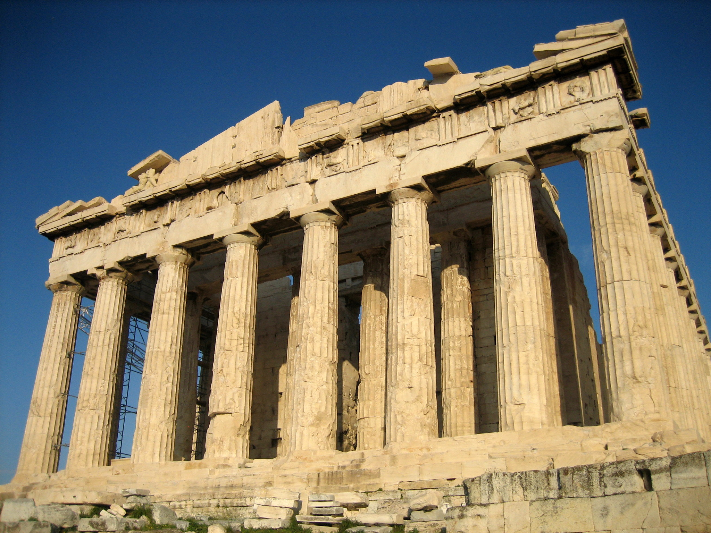
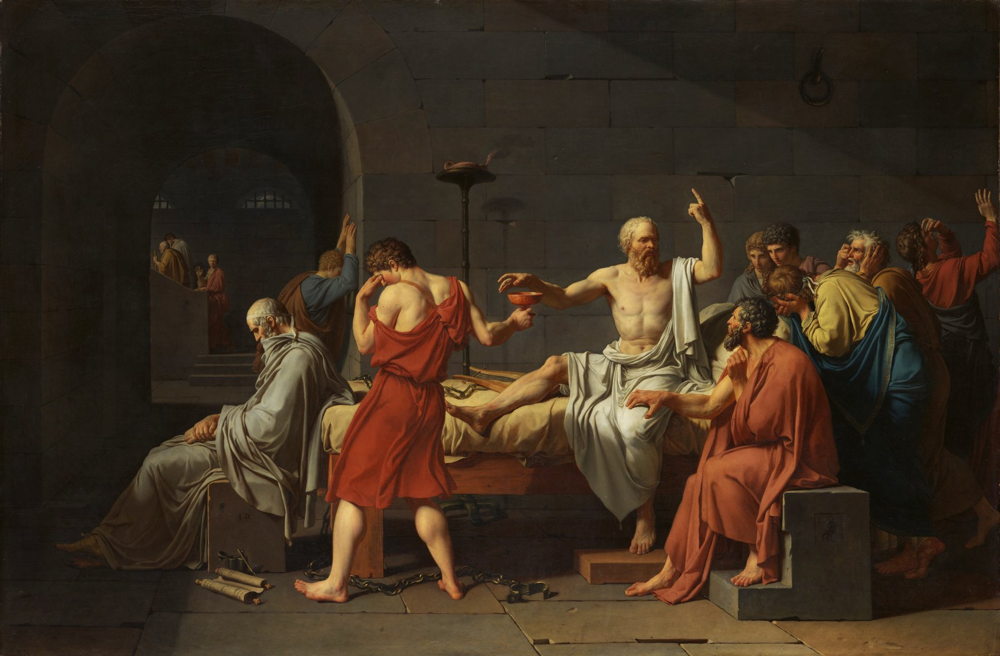
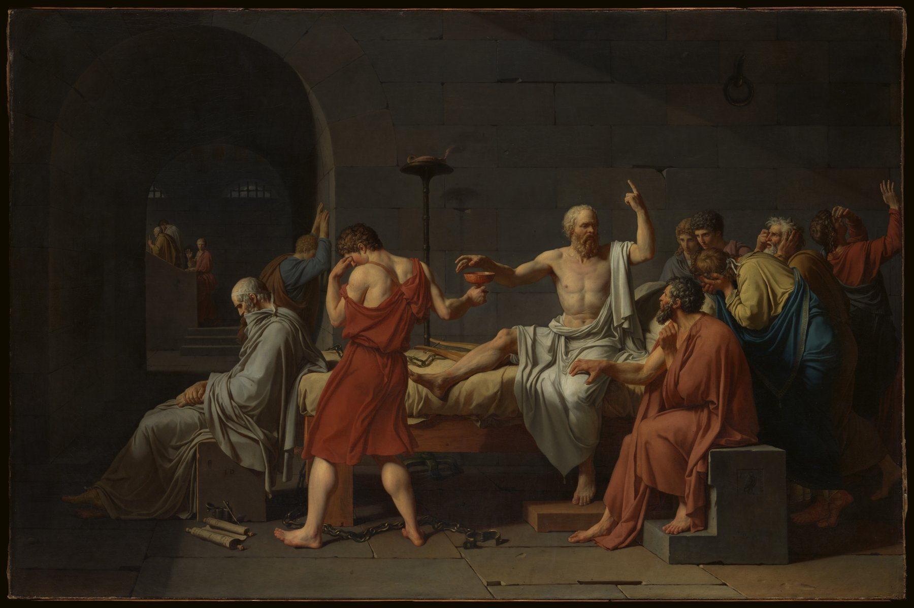
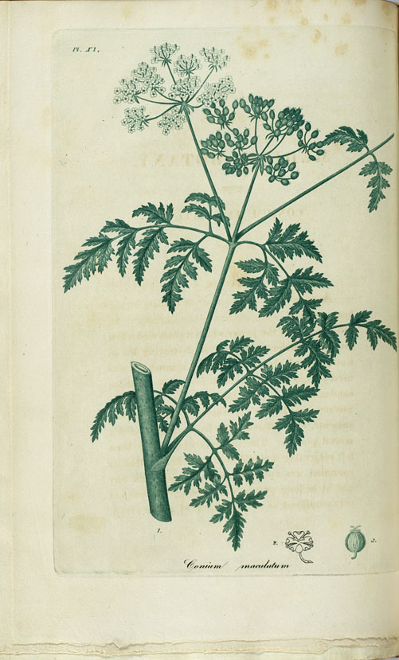
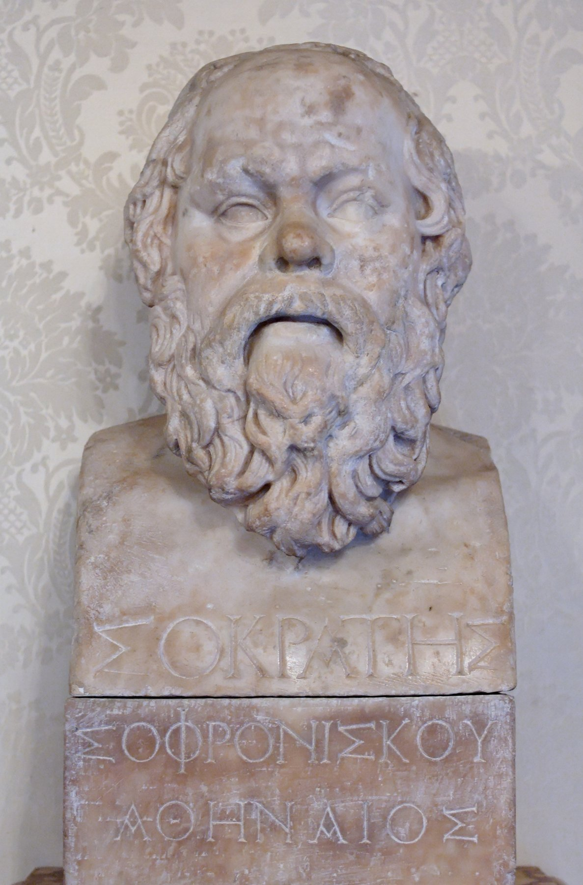
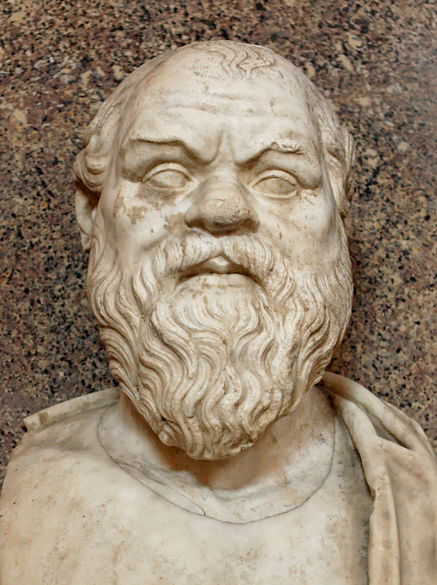
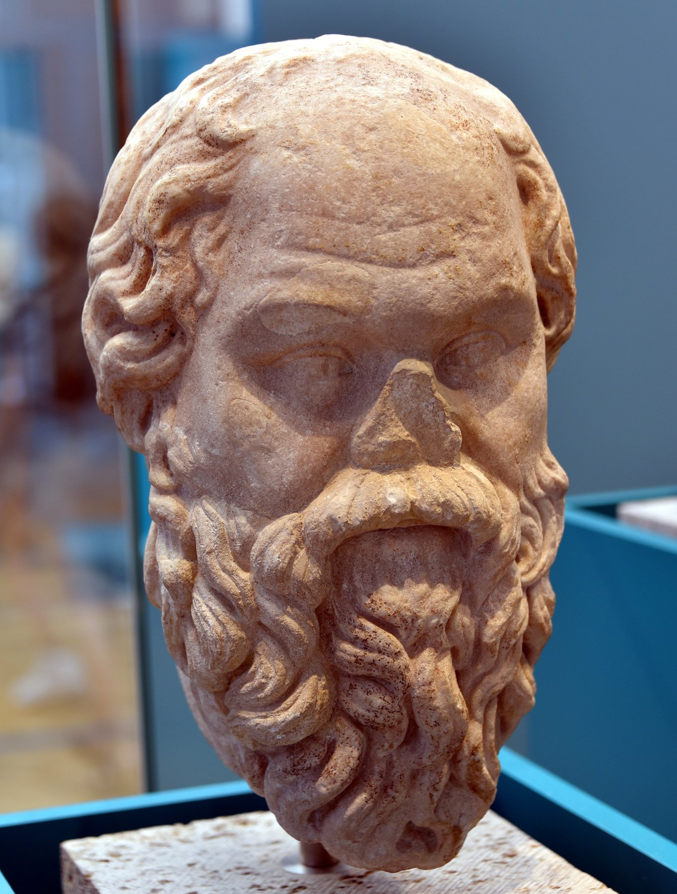
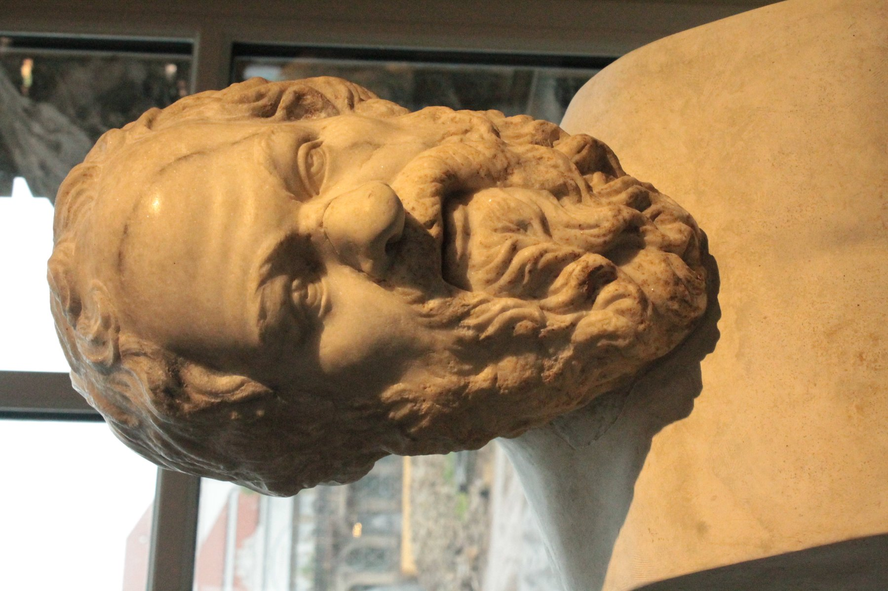
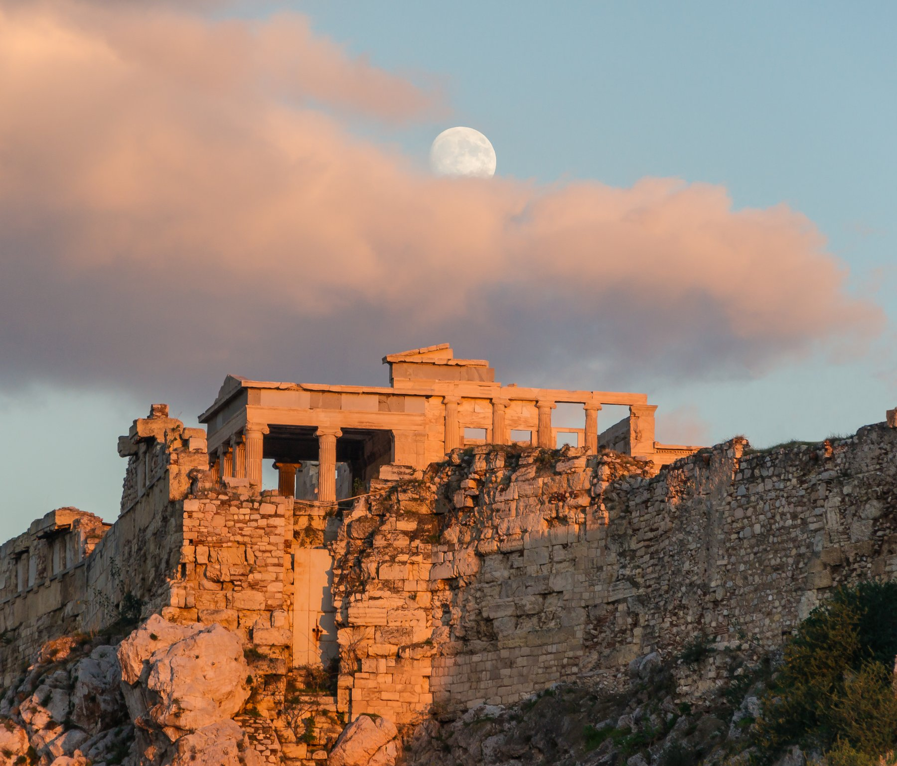

한 인간이 옷도 신도 없이 광장을 걸으면서 가장 부유한 청년들에게 가장 불편한 질문을 던지기 시작했다. 그 질문이 한 도시를 두 동강 냈다.
기원전 470년 무렵, 아테네 변두리의 알로페케 구(區)에서 한 사내아이가 태어났다. 아버지 소프로니스코스는 석공이었고, 어머니 파이나레테는 산파였다. 그가 평생 자신의 일을 두 부모의 일에 비유하기를 좋아한 것은 우연이 아니다. 돌을 깎듯이 사람의 영혼에서 군더더기를 떼어내고, 산파가 아이를 받아내듯이 다른 사람의 영혼이 품은 생각을 끄집어낸다. 이 두 가지가 평생 그의 방식이었다.
그가 태어난 아테네는 한창 절정으로 향하는 도시였다. 페르시아 전쟁에서 살아남은 지 십 년, 살라미스 해전의 영광이 아직 마르지 않았고, 페리클레스라는 정치가가 막 등단하던 시기였다. 도시가 부유해지자 곳곳에서 새 사상이 끓어올랐다. 그러나 이 아이는 학교에 가는 대신 아버지를 따라 돌가루 속에서 자랐다. 후일 그가 한 말이 사료에 전한다. "나는 두 분의 가업 모두를 물려받았다. 다만 돌 대신 사람을, 갓난아이 대신 생각을 다룬다."
그의 출생 연도에는 사료마다 약간씩 차이가 있다. 디오게네스 라에르티오스는 그가 제77회 올림피아드 제4년, 즉 기원전 469년 타르겔리온 달 여섯째 날에 태어났다고 적었다. 다른 계산은 470년을 가리킨다. 한두 해의 차이지만, 이 작은 어긋남은 소크라테스라는 인물 전체의 성격을 미리 보여준다. 그에 관한 거의 모든 사실은 그가 직접 쓴 한 줄이 아니라 후세 사람들의 기록을 통해 우리에게 온다. 그는 한 권의 책도 남기지 않았다. 우리가 그를 안다고 믿는 모든 것은 사실 플라톤이, 크세노폰이, 아리스토파네스가, 디오게네스 라에르티오스가 그렸다고 믿는 한 사람의 초상일 뿐이다. 학자들은 이 곤란을 소크라테스 문제라 부른다. 우리는 처음부터 끝까지 다른 사람의 펜을 통해 한 사람을 만난다.
아버지 소프로니스코스가 석공이었다는 사실에는 한 가지 흥미로운 후일담이 따른다. 한때 사람들은 아크로폴리스로 올라가는 길목에 서 있던 한 무리의 카리테스 여신상이 젊은 시절 소크라테스의 작품이라 믿었다. 파우사니아스가 이 전승을 자기 여행기에 적어 두었다. 후세 학자들은 이를 의심하지만, 한 철학자가 본래 돌을 다루던 손에서 출발했다는 이 이미지 자체는 그리스인에게 깊은 인상을 남겼다. 돌에서 불필요한 부분을 떼어내 형상을 드러내는 일과, 사람의 말에서 군더더기를 깎아내 진실을 드러내는 일이 같은 한 동작이라는 것을, 그의 평생이 증명했기 때문이다.
한눈에 보는 소크라테스
생몰기원전 470/469년경 ~ 기원전 399년 봄 (약 70세)
출생지아테네 알로페케 구(데모스)
부모석공 소프로니스코스, 산파 파이나레테
아내크산티페 (이후 미르토 전승은 논란)
자녀람프로클레스, 소프로니스코스, 메넥세노스 세 아들
종군포티다이아·델리온·암피폴리스 세 전투
죽음독당근(코니움) 즙, 불경·청년 타락죄 사형
저술한 줄도 없음 (제자들의 기록만 전함)
소크라테스 흉상 · 1세기 로마 시대 헬레니즘 원본 복제. 들창코, 튀어나온 눈, 두꺼운 입술. 당대 미의 기준에 정반대로 생긴 얼굴이었다. 루브르 박물관 소장. 출처: Wikimedia Commons (Socrates_Louvre.jpg)
알로페케는 아테네 성벽 바로 바깥, 도심에서 걸어서 멀지 않은 한 농촌 구역이었다. 소크라테스는 이 작은 데모스의 시민으로 평생을 등록했고, 죽는 날까지 아테네라는 도시의 울타리를 거의 벗어나지 않았다. 그의 동시대인 가운데 가장 멀리 여행한 사람들, 가령 역사가 헤로도토스가 이집트와 페르시아를 누비고, 정치가들이 시칠리아와 흑해까지 함대를 보내던 시대에, 그는 한 도시의 광장 안에서 평생을 보냈다. 그러나 그가 던진 질문은 그 어떤 함대보다 멀리 갔다. 그의 발은 한 도시에 묶였으나 그의 물음은 이천오백 년의 시간과 모든 대륙을 건넜다.

파르테논 신전 · 소크라테스가 청년이던 무렵 아크로폴리스 위에 막 올라가던 페리클레스 시대의 상징. 그가 평생 광장에서 올려다본 풍경이다. [Wikimedia · CC]
곁가지 하나 — 가장 못생긴 철학자의 얼굴
고대 사료들이 그의 외모에 합의한 단어가 있다. 들창코, 부풀어 오른 입술, 튀어나온 두 눈, 짧은 목, 둥근 배. 플라톤의 향연에서 알키비아데스는 그를 사티로스 실레노스의 인형 같다고 묘사한다. 겉을 보면 광장 어디서나 마주칠 만한 늙은 떠돌이다. 그러나 그 인형을 열어보면 그 안에 황금의 신상이 들어 있다. 알키비아데스의 비유다. 그리스인은 미와 선이 한 단어 칼로카가티아였다. 아름다워야 선하고, 선해야 아름답다. 소크라테스는 그 등식에 평생 한 사람의 반례로 서 있었다.
그는 어린 시절부터 자신의 안에서 어떤 목소리가 들린다고 말했다. 그리스어로 다이모니온. 신령한 신호다. 그러나 이 목소리는 무엇을 하라고 시키지 않는다. 오직 하지 말라고만 한다. 어디로 가지 마라, 그 말을 하지 마라. 이상한 일이다. 한 사람이 큰일을 결정할 때 안에서 들리는 신호가 오직 거부의 신호뿐이라면, 결국 그 사람은 자기가 진짜 하고 싶은 일을 스스로 발견해야 한다는 뜻이다. 훗날 그를 법정에 세운 고발장에 새로운 신령을 끌어들였다는 죄목이 들어간 것은, 바로 이 다이모니온 때문이었다.
흥미롭게도 변론에서 그는 죽음을 향해 걸어가던 그날, 아침에 집을 나설 때도, 법정으로 향할 때도, 변론 도중에도 그 익숙한 목소리가 한 번도 자기를 막지 않았다고 말한다. 평소 같으면 사소한 일에도 끼어들던 신호가 그날만큼은 침묵했다. 그는 이 침묵을 한 가지 증거로 받아들인다. 내가 지금 가는 길이 나쁜 길이 아니라는 것이다. 죽음이 두려워할 일이 아닐 수도 있다는 것이다. 한 사람이 자기 죽음의 날에 자기 안의 가장 깊은 신호로부터 침묵의 허락을 받았다고 믿는 이 장면은, 후세 철학자들이 두고두고 곱씹은 대목이다.
이 다이모니온을 두고 학설이 갈린다. 한쪽은 그것을 일종의 종교적 체험, 곧 그가 진짜로 어떤 신적 신호를 들었다고 본다. 다른 쪽은 그것을 그의 도덕적 직관, 곧 양심의 목소리를 그 시대의 종교적 언어로 표현한 것이라 본다. 어느 해석이든 한 가지 사실은 변하지 않는다. 그가 도시가 공인한 신들과는 다른, 자기만의 사적인 신적 신호를 따랐다는 점이다. 도시의 신을 도시가 정한 방식으로 섬기는 일이 시민의 의무이던 사회에서, 한 사람이 자기 안의 목소리를 더 깊이 신뢰한다는 것은 그 자체로 도시 질서에 대한 조용한 도전이었다. 그를 죽인 고발장의 한 죄목이 정확히 그 지점을 겨눈 것은 우연이 아니었다.
아이가 태어난 해 즈음에 키몬이 페르시아 함대를 에우리메돈 강에서 격파하고 있었다. 페리클레스가 정치 무대의 전면으로 나오기 직전이다. 아테네의 황금 시대가 막 시작되고 있었다.
페르시아
대왕 크세르크세스 1세가 궁중 음모로 살해된 직후. 그의 아들 아르타크세르크세스 1세가 즉위해 그리스 도시국가들에 화의의 손짓을 보내기 시작한다. 살라미스의 패배가 페르시아 궁정에 남긴 흔적은 그만큼 깊었다.
인도
마가다 왕국의 빔비사라가 죽고 아들 아자타샤트루가 통치 중. 같은 시기 갠지스 평원에서는 한 노인이 보리수 아래에서 깨달음을 얻은 지 약 오십 년이 지나고 있었다. 부처 사후의 첫 결집이 라자그리하에서 끝난 직후다.
중국
춘추시대 말기. 공자가 세상을 뜬 지 약 십 년이다. 그의 제자들이 노나라 곳곳에 흩어져 『논어』의 원형을 정리하고 있었다. 동방과 서방의 두 위대한 스승, 공자와 소크라테스의 인생이 한 세대 거리를 두고 겹친다.
II
BC 450년경 · 아테네
아낙사고라스와 자연철학의 그늘
강의 듣기
청년 소크라테스는 한때 자연 철학에 사로잡혔다. 그러나 어느 책에서 한 단어를 읽고 크게 실망한 뒤에 영원히 그 길에서 돌아섰다.
청년기에 소크라테스는 당시 아테네에서 가장 유명한 자연철학자 아낙사고라스의 강의를 들었다고 전해진다. 직접 그의 제자가 된 것은 아니지만, 그의 책을 일 드라크마에 광장에서 사서 읽었다. 아낙사고라스는 페리클레스의 친구였고, 태양은 신이 아니라 펠로폰네소스 반도만 한 크기의 뜨거운 돌덩어리라 가르친 사람이다. 이 한 문장 때문에 그는 훗날 신성모독죄로 아테네에서 추방되었다.
플라톤의 파이돈에 따르면, 청년 소크라테스가 그 책을 펼친 이유는 한 단어 때문이었다. 누스. 그리스어로 정신, 지성이다. 아낙사고라스는 우주를 움직이는 근본 원인이 누스라고 썼다. 청년은 흥분했다. 그러면 누스가 모든 것을 가장 좋은 방식으로 배치한다는 설명이 따라 나오리라 기대한 것이다. 왜 땅은 둥근가, 누스가 그것이 가장 좋다고 판단했기 때문이다. 왜 별은 저렇게 도는가, 누스가 그것이 가장 좋다고 판단했기 때문이다. 청년은 그런 설명을 기다렸다.
그런데 아낙사고라스의 책은 첫 문단 이후로는 누스라는 단어를 거의 쓰지 않았다. 그 대신 공기, 에테르, 회전, 입자가 어떻게 부딪쳤는지를 설명한다. 청년 소크라테스는 책을 덮으면서 깊이 실망했다. "왜 그러한가에 대한 답을 약속해놓고, 어떻게 그렇게 되는가의 기계 장치만 늘어놓는 사람이다." 이 한 번의 실망이 그를 자연철학에서 영원히 돌아서게 만들었다. 그 후로 그는 평생, 하늘의 별이 아니라 사람의 마음을 들여다본다. 별이 어떻게 도는가가 아니라 사람이 어떻게 살아야 하는가를 묻는다.
나는 청년 시절 자연의 지혜라 부르는 것을 알고 싶어 안달이 났다. 그러나 그 책을 덮고 나서 나는 다른 길을 가기로 했다. 사람 안의 일을 모르고는 사람 밖의 일을 알 도리가 없다는 것을 깨달았기 때문이다.
Plato, Phaedo 96a–99d
이 전환을 후세 학자들은 철학사의 한 분기점으로 본다. 소크라테스 이전의 그리스 철학자들, 탈레스부터 아낙시만드로스, 헤라클레이토스, 파르메니데스, 엠페도클레스에 이르기까지 그들의 질문은 한결같이 자연을 향했다. 만물의 근원은 무엇인가. 물인가, 불인가, 공기인가, 수인가. 그래서 후세는 그들을 통틀어 자연철학자라 부른다. 소크라테스는 그 흐름에서 처음으로 시선을 돌려 인간의 내면, 곧 사람이 어떻게 살아야 옳은가를 철학의 한복판으로 끌어들인 사람이다. 그래서 철학사는 그의 이름을 기준으로 둘로 나뉜다. 소크라테스 이전과 소크라테스 이후로.
다만 한 가지 주의가 필요하다. 소크라테스가 자연 탐구를 완전히 경멸했다고 단정할 수는 없다. 크세노폰의 회상에 따르면 그는 천문과 기하를 실용에 도움이 되는 한도에서는 배워두라고 권했다. 다만 별의 운행을 끝까지 계산하느라 정작 자기가 어떻게 살아야 하는지를 잊는 일을 경계했을 뿐이다. 그의 비판은 자연 지식 자체가 아니라, 자기 자신을 모르는 채 우주를 안다고 자부하는 그 거꾸로 선 우선순위를 향했다. 이 점에서 그는 반(反)과학자가 아니라, 모든 앎을 사람의 삶이라는 저울 위에 다시 올려놓은 사람이었다.
곁가지 — 사상의 전환, 동방과 서방의 같은 순간
이 전환은 우연이 아니라 한 시대의 큰 흐름이었다. 독일 철학자 카를 야스퍼스는 기원전 800년에서 200년 사이를 축의 시대라 불렀다. 같은 시기에 그리스에서는 소크라테스, 인도에서는 부처, 중국에서는 공자와 노자, 페르시아에서는 자라투스트라의 가르침이 끓어오르고 있었다. 모두 자연의 신비에서 인간의 내면으로 시선을 돌린 사람들이다. 야스퍼스의 표현을 빌리면, 인류가 처음으로 자기 자신을 알기 시작한 시대다.
[Karl Jaspers, Vom Ursprung und Ziel der Geschichte, 1949 · Britannica, "Axial Age"]
곁가지 — 산파술이라는 이름의 방법
소크라테스가 자기 방법을 어머니의 일에 비유한 것은 단순한 말장난이 아니었다. 플라톤의 테아이테토스에서 그는 이렇게 설명한다. 산파는 스스로 아이를 낳지 않는다. 산파는 다만 다른 여인이 아이를 낳도록 돕는다. 또한 산파는 진짜 아이와 가짜 진통을 구별할 줄 안다. 자기도 똑같다는 것이다. 자기는 한 가지 지혜도 직접 낳지 못하는 불모의 사람이지만, 다른 사람이 자기 안에 품은 생각을 끄집어내도록 돕는 데에는 능하다. 그리고 그렇게 태어난 생각이 진짜인지 헛바람인지를 검증으로 가려낸다. 이 비유에는 한 가지 깊은 겸손이 들어 있다. 진리는 내가 너에게 주는 것이 아니라, 네가 본래 네 안에 품고 있던 것을 내가 받아내는 것이다.
[Plato, Theaetetus 148e–151d]
아테네
페리클레스의 시대가 시작되고 있었다. 파르테논의 첫 돌이 아크로폴리스에 놓이는 것이 십 년 뒤다. 같은 광장에서는 프로타고라스, 고르기아스 같은 소피스트들이 등장해 청년들을 돈을 받고 가르치기 시작한다. 그들은 진리는 사람의 기준에 따라 다르다고 가르쳤다. 소크라테스는 평생 그 가르침을 정반대로 맞받아치게 된다.
그리스 다른 도시
엘레아의 제논이 운동 자체를 부정하는 역설들을 제시하고 있었다. 아브데라의 데모크리토스는 처음으로 원자라는 개념을 내놓는다. 같은 시기에 한 사람은 광장에서 사람 마음을 묻고 있었다.
인도
마가다와 코살라가 갠지스 평원의 패권을 다투던 때. 부처 사후 첫 결집의 기억이 아직 생생했고, 자이나교 창시자 마하비라의 사상이 평행하게 퍼지고 있었다.
Tabula I · 페리클레스의 아테네
BC 470–440 · 황금시대의 도시와 청년 소크라테스
아티카(아테네 영역) 펠로폰네소스·이웃 성역·신탁
소크라테스가 태어난 황금시대의 아테네. 아고라에서 델포이까지 하루 거리, 아테네에서 스파르타까지 사흘 거리. 그의 평생 무대는 이 작은 반도 안에 거의 다 들어왔다.
III
BC 432년 · 칼키디케 포티다이아
포티다이아의 군인 — 알키비아데스를 구하다
강의 듣기
철학자라 하면 책상 앞에 앉은 노인을 떠올리기 쉽다. 그러나 소크라테스는 세 번의 전쟁에 나가 중장보병의 갑옷을 입고 창을 들고 싸웠다.
기원전 432년, 마흔에 가까운 소크라테스는 칼키디케 반도의 도시 포티다이아 포위전에 종군한다. 아테네 시민은 성년이 되면 누구나 호플리테스, 중장보병으로 복무할 의무가 있었다. 그는 평생 셋 이상의 전투에 나간다. 포티다이아, 델리온, 암피폴리스. 세 곳 모두에서 사료들은 그의 용기를 함께 칭찬한다.
포티다이아 포위전은 겨울 추위가 혹독했다. 플라톤의 향연에서 알키비아데스가 회상한다. 다른 병사들은 양털 망토와 가죽신을 껴입어도 떨었지만, 소크라테스는 평소처럼 얇은 외투에 맨발로 얼음 위를 걸어다녔다. 동료 병사들이 그를 일종의 별난 사람으로 여기기 시작했다. 그러나 별남은 거기서 그치지 않았다. 어느 새벽, 그가 한 자리에 서서 무언가를 골똘히 생각하기 시작했는데, 한 시간이 지나고 두 시간이 지나도 움직이지 않았다. 동료들이 신기해서 자기 침낭을 들고 나와 그를 둘러싸고 잤다. 다음 날 해가 떴을 때에도 그는 같은 자리에 서 있었다. 해를 향해 절을 한 다음에야 그는 비로소 발을 옮겼다.
가장 결정적 순간은 후퇴 길의 어느 격전이었다. 청년 알키비아데스가 부상해 쓰러졌다. 소크라테스는 그를 자기 등에 업고 그의 무기까지 챙겨 적의 추격을 막아내며 빠져나왔다. 전공의 영예가 청년에게 돌아갔다. 소크라테스는 그 청년에게 양보했다. 알키비아데스 본인이 훗날 향연 자리에서 자백한다. "그 명예는 내 것이 아니라 그분의 것이었다. 그러나 그분은 끝까지 자기에게 그 화관을 씌우려 하지 않으셨다."
여기서 한 가지 짚어둘 점이 있다. 아테네 시민에게 종군은 선택이 아니라 의무였다. 자기 돈으로 갑옷과 창과 방패를 마련할 수 있는 시민은 호플리테스, 곧 중장보병이 되었다. 가난해 갑옷을 살 수 없는 시민은 노 젓는 수병이 되었다. 그러므로 한 사람이 어느 병종으로 복무했는지는 그 사람의 재산 등급을 그대로 드러낸다. 소크라테스가 평생 가난했다는 사실은 분명하지만, 적어도 그가 자기 갑옷을 갖춘 호플리테스로 복무했다는 사실은 그가 완전한 빈민은 아니었음을 보여준다. 그는 중간쯤의 시민이었고, 그 중간의 자리에서 도시의 가장 부유한 청년들과 가장 가난한 장인들 모두에게 똑같이 질문을 던질 수 있었다.
전장의 소크라테스를 전하는 사료가 한 사람의 입에 집중되어 있다는 점도 기억해 둘 만하다. 그 한 사람이 바로 알키비아데스다. 그는 아테네 역사상 가장 화려하고 가장 위험한 청년이었고, 동시에 소크라테스를 가장 사랑하고 가장 배신한 제자였다. 그가 향연 자리에서 술에 취해 쏟아낸 회상이, 우리가 가진 전장의 소크라테스에 관한 거의 유일한 생생한 증언이다. 한 위인의 가장 인간적인 면모가, 그를 가장 깊이 실망시킨 제자의 입을 통해 우리에게 전해진다는 사실은 그 자체로 한 편의 비극이다.
호플리테스 소크라테스 — 세 전투
포티다이아기원전 432–430년 · 칼키디케 포위전 · 알키비아데스 구출
델리온기원전 424년 · 보이오티아 · 패주 중 침착한 후퇴
암피폴리스기원전 422년 · 트라키아 · 클레온·브라시다스 전사
병종중장보병(호플리테스), 자비로 갑옷 마련
증언자알키비아데스(향연), 라케스(라케스 편)
곁가지 — 별난 사람의 별남이 갖는 위엄
한 사람이 얼음 위를 맨발로 걸어다닐 수 있는 것은 두 가지 가운데 하나다. 하나는 미친 사람이고 다른 하나는 자기 몸에 신경 쓰지 않을 만큼 더 큰 일에 마음이 가 있는 사람이다. 동료 병사들은 처음에는 그를 첫 번째로 보다가 시간이 지나면서 두 번째로 보기 시작했다. 부와 명예와 따뜻한 양털 망토가 한 인간의 행복에 필수가 아닐 수도 있다는 가능성을, 그들은 한 늙은 보병에게서 본능적으로 배웠다. 사상은 책에서 옮겨지지 않는다. 사상은 사람에게서 사람으로 옮겨진다.
포티다이아의 반란이 도화선이 되어 곧 펠로폰네소스 전쟁이 시작된다. 아테네와 스파르타가 그리스 세계 전체를 두 진영으로 갈라 27년을 싸운다. 소크라테스의 인생 후반은 통째로 그 전쟁의 그늘 안에 놓여 있다.
중국
춘추시대가 끝나가고 전국시대가 시작되던 무렵. 진(晉)이 한과 위와 조 세 나라로 분열한 것이 이 시기다. 같은 시기 노나라에서는 공자의 손자 자사가 『중용』의 원형을 정리하고 있었다.
페르시아
아르타크세르크세스 1세 만년. 페르시아는 그리스 도시국가들의 분열을 정확히 읽고 있었다. 평화 때는 양쪽에 동시에 외교 사절을 보내고, 전쟁 때는 양쪽에 동시에 금화를 보냈다. 후일 스파르타에 막대한 금을 대 아테네를 무너뜨리는 것이 페르시아다.
IV
BC 430년경 · 델포이
델포이의 신탁 — 가장 지혜로운 자
강의 듣기
한 친구가 델포이 신탁에 물었다. 소크라테스보다 더 지혜로운 자가 있느냐. 신탁은 답했다. 없다. 그날부터 소크라테스의 일생은 그 한마디를 반증하는 일이 되었다.
소크라테스의 어린 시절 친구 카이레폰은 충동적인 사내였다. 어느 날 그가 델포이의 아폴론 신전을 찾아가 무녀 피티아에게 물었다. "세상에 소크라테스보다 더 지혜로운 사람이 있습니까." 피티아의 답이 돌아왔다. "없다."
친구가 신이 나서 이 답을 들고 아테네로 돌아왔을 때, 소크라테스는 처음으로 깊은 곤혹에 빠진다. 자신은 자기가 아무것도 모른다는 사실을 가장 잘 아는 사람이다. 신이 거짓을 말할 리 없는데, 신탁이 자기를 가장 지혜롭다 했다. 어딘가 어긋난다. 그가 결심한다. "신이 한 말을 시험해보자. 누구든 나보다 지혜롭다고 알려진 사람을 찾아가서, 그가 진짜로 지혜로운지 살펴보자. 그래서 그가 더 지혜롭다면, 그 사람을 신탁에게 보여주리라."
여기서 한 가지 사료의 문제를 짚어야 한다. 카이레폰이 정말 델포이에 가서 그런 질문을 했는지, 그리고 신탁이 정확히 그렇게 답했는지는 오직 플라톤과 크세노폰의 기록에만 의존한다. 두 사람의 전언에도 미묘한 차이가 있다. 플라톤의 변론에서는 신탁이 소크라테스보다 더 지혜로운 자는 없다고 답했다 하고, 크세노폰의 판본에서는 더 자유롭고 정의롭고 분별 있는 사람이 없다고 답했다 한다. 어느 쪽이 원형인지 우리는 알 수 없다. 다만 카이레폰이 실존 인물이었고, 아리스토파네스의 희극에도 박쥐처럼 창백한 소크라테스의 추종자로 등장한다는 점은 확실하다. 한 충동적인 친구의 한순간의 질문이, 한 철학자의 평생 사명을 점화한 불씨가 되었다는 이 이야기의 뼈대만큼은 사료들이 한목소리로 전한다.
그가 차례로 찾아간 사람들의 명단은 변론에 등장한다. 정치가, 시인, 장인. 그 결과는 한결같았다. 정치가는 자기가 모르는 큰 문제들 즉 정의, 좋음, 용기에 대해 마치 아는 듯이 떠들었다. 시인은 자기가 쓴 시조차 정확히 해설하지 못했다. 장인은 자기 업의 솜씨는 분명히 알았지만, 그 솜씨 때문에 자기가 다른 큰 문제들까지 안다고 착각했다. 소크라테스가 마침내 깨닫는다. "내가 그들보다 한 발 더 지혜로운 점이 있다면, 단 한 가지다. 그들은 모르면서 안다고 생각하고, 나는 모른다는 사실을 안다."
그러므로 나는 보았다. 사람들은 자기가 가장 자랑하는 것에서 가장 자주 자신을 속인다. 안다고 믿는 그 한 마디가, 진짜 앎을 가로막는다.
Plato, Apology 21b–23b
이 한 줄에 소크라테스의 평생 사업 전체가 들어 있다. 그가 광장에 서서 사람들에게 던진 모든 질문은, 결국 이 한 줄을 풀어쓰는 일이었다. 정의가 무엇인지 아는가, 정말 아는가, 그렇게 정의를 안다고 한 그대의 말은 어떤 근거 위에 서 있는가. 이 끈질긴 검증의 방식이, 그리스 어디에도 없던 새로운 철학의 길을 열었다. 후세 사람들은 이 방식에 그의 이름을 붙였다. 소크라테스적 문답법, 곧 엘렌코스다.
엘렌코스는 한 가지 정해진 절차를 따른다. 먼저 상대가 어떤 주장을 내놓는다. 정의란 강자의 이익이다, 용기란 두려움을 모르는 것이다, 경건이란 신을 기쁘게 하는 것이다. 그러면 소크라테스가 그 주장에서 따라 나오는 다른 명제들을 차례로 묻는다. 상대가 그 명제들에 하나씩 동의하다 보면, 어느 순간 그 동의들이 처음 주장과 정면으로 부딪힌다. 상대는 자기 입으로 자기 주장을 반박한 셈이 된다. 이 막다른 골목을 그리스어로 아포리아, 곧 길 없음이라 한다. 소크라테스의 대화편 상당수가 이 아포리아에서 끝난다. 정의가 무엇인지 끝내 답하지 못한 채, 적어도 우리가 그것을 모른다는 사실 하나만 또렷이 확인하고 끝나는 것이다.
왜 답을 주지 않고 막다른 골목에서 끝내는가. 여기에 소크라테스 방법의 핵심이 있다. 그는 한 사람에게 정답을 떠먹여 주는 일이 그 사람을 진짜로 지혜롭게 만들지 못한다고 보았다. 한 사람이 자기가 안다고 굳게 믿던 것이 사실은 모르는 것이었음을 스스로 깨닫는 그 충격, 그 충격이야말로 모든 진짜 배움의 시작이라 보았다. 안다는 착각을 깨뜨리는 일이 먼저고, 그 빈자리에서 비로소 진짜 탐구가 시작된다. 그래서 그의 문답은 늘 무언가를 세우기 전에 먼저 허문다. 이 허묾의 용기 때문에 그는 많은 사람의 미움을 샀고, 결국 그 미움이 그를 죽인다.
다만 한 가지를 분명히 해 둘 필요가 있다. 너 자신을 알라와 나는 내가 모른다는 것을 안다는 두 문장은 흔히 소크라테스의 좌우명처럼 인용되지만, 어느 것도 그가 토씨까지 그대로 말했다고 단정하기 어렵다. 앞의 것은 델포이 신전의 격언이고, 뒤의 것은 변론의 한 대목을 후세가 압축한 표현이다. 소크라테스라는 인물은 이렇게 자기가 한 적 없는 말의 주인으로 자주 호명된다. 그것은 그만큼 그가 한 시대의 지혜 전체를 대표하는 하나의 상징이 되었다는 뜻이기도 하다.
곁가지 — 너 자신을 알라, 그 누구의 말인가
델포이 신전의 입구 박공에 새겨져 있던 짧은 격언이 셋 있었다. 너 자신을 알라.지나치지 마라.맹세는 화의 근원이다. 첫 번째 격언은 소크라테스의 좌우명처럼 후세에 알려졌지만, 그 자신이 한 말은 아니다. 그러나 그가 평생 한 일은 그 격언을 한 사람씩 차례로 만나서 실행해 보인 일이었다. 너 자신을 알라. 자기가 모른다는 사실을 아는 일에서 모든 앎이 시작된다는, 그 한 줄을 위해 그는 평생을 바쳤다.
[Pausanias, Description of Greece 10.24.1 · Plutarch, Moralia 116c]
아테네
이즈음 페리클레스가 죽었다. 역병이 도시를 휩쓸어 인구의 사분의 일이 죽었다. 페리클레스 본인도 그 역병으로 죽는다. 도시는 갑작스레 지도자를 잃었다. 그 빈자리를 차지하기 위해 청년 정치가들이 광장으로 몰려나오기 시작했다. 그들이 소크라테스의 비판 대상이 된다.
인도
같은 세기에 갠지스 평원에서는 마하비라의 자이나교가 부처 가르침과 평행하게 퍼지고 있었다. 둘 다 자기 안의 진실을 묻는 점에서 소크라테스와 일맥이 통한다.
V
BC 423년 · 아테네 디오니소스 극장
아리스토파네스의 구름 — 희극 무대 위의 소크라테스
강의 듣기
한 희극 작가가 그를 무대 위 바구니에 매달아 천장에서 흔들었다. 관객은 웃었다. 그 웃음이 이십사 년 뒤 사형판결을 가능하게 했다.
기원전 423년, 아테네의 디오니소스 극장에서 희극 작가 아리스토파네스의 신작 『구름』이 상연되었다. 주인공은 빚더미에 시달리던 농부 스트레프시아데스. 그는 빚쟁이를 따돌리는 궤변술을 배우기 위해 한 사상가의 학교에 아들을 보낸다. 그 사상가의 이름이 바로 소크라테스다. 무대 위 소크라테스는 바구니에 매달려 천장에서 흔들리며 등장한다. "하늘 위의 일을 더 잘 보기 위해서다."
이 희극의 소크라테스는 실제 인물과 닮은 점이 거의 없다. 그는 자연철학자이고, 신을 부정하고, 옳고 그름을 뒤바꿔주는 궤변술의 대가다. 한마디로 당시 아테네 사람들이 소피스트라 부르던 부류의 총집합이다. 진짜 소크라테스는 평생 한 푼도 받지 않고 가르쳤고, 자연철학을 일찍 버렸고, 궤변과 평생 싸웠다. 그러나 무대 위에서는 한 늙은 들창코의 모습으로 그 모든 죄목이 한 사람에게 덧씌워졌다.
흥미로운 사실 하나. 그 공연에 소크라테스 본인이 객석에 앉아 관람했다고 한다. 옆자리 외국인이 무대 위의 인물이 누구냐 물었을 때, 그는 일어서서 자기 얼굴을 보여주었다고 한다. "저 위의 사람이 저입니다. 살펴보시지요." 웃음 한가운데에서 그는 웃었다.
그러나 후일 변론에서 그는 이 희극을 가장 무서운 고발자로 지목한다. "새 고발자들은 어제 나타났다. 옛 고발자는 여러분이 아주 어렸을 때부터 여러분의 귀에 한 인상을 심어놓았다. 그 인상은 사라지지 않는다." 한 인간을 죽이기 위해 필요한 것은 새 증언이 아니라, 오래 남아 익은 인상이다. 희극은 한 번 웃긴 다음에도 사람의 마음 깊이에 한 그림자를 새긴다. 이십사 년 뒤 사형 판결이 가능했던 이유는 그 그림자였다.
한 가지 역사적 단서를 덧붙여야 한다. 우리가 지금 읽는 구름은 기원전 423년에 무대에 오른 원본이 아니다. 그해 디오니소스 축제에서 이 작품은 세 편 중 꼴찌를 했다. 자존심이 상한 아리스토파네스는 몇 해 뒤 대본을 고쳐 썼다. 오늘날 전해지는 판본은 그 개정본이다. 그러므로 우리가 보는 무대 위 소크라테스의 모습이 정확히 기원전 423년 아테네 시민이 본 그 모습인지조차 확실치 않다. 한 인물의 가장 유명한 풍자초차 후대의 손질을 거친 판본이라는 사실은, 소크라테스를 둘러싼 모든 자료가 얼마나 여러 겹의 거울을 통과해 우리에게 오는지를 다시 한번 일깨운다.
그렇다고 아리스토파네스를 단순한 가해자로만 볼 수는 없다. 플라톤은 정작 향연에서 아리스토파네스를 한 자리에 불러 인간이 본래 한 몸이었다는 그 아름다운 사랑의 신화를 그의 입으로 말하게 한다. 소크라테스의 죽음을 다룬 작가가, 그를 무대 위에서 조롱했던 그 희극 작가를 자기 가장 아름다운 대화편의 한 손님으로 초대한 것이다. 두 사람이 실제로 서로를 어떻게 생각했는지 우리는 모른다. 그러나 적어도 한 가지는 분명하다. 아테네라는 도시는 한 인간을 동시에 사랑하고 조롱하고 죽일 수 있을 만큼 좁고 또 복잡한 무대였다.
곁가지 — 이미지의 정치, 이천오백 년 전과 지금
한 사람을 무력화하는 가장 확실한 방법은 그 사람을 우스꽝스럽게 만드는 일이다. 진지한 반박은 그 사람을 적어도 같은 무게의 상대로 인정한다. 그러나 풍자는 그 사람을 무대 위 광대로 만들어 그 무게 자체를 빼앗아간다. 한 번 광대로 머릿속에 새겨진 사람은 그 다음에 무슨 말을 해도 그 광대의 입에서 나오는 말이 된다. 아리스토파네스의 솜씨는 천재였고, 그 천재성이 한 인간을 죽음에 한 발 더 가까이 밀어붙였다는 사실은 희극의 위험한 본성에 대한 가장 오래된 증거다.
펠로폰네소스 전쟁이 이미 팔 년째였다. 도시 안에서는 매년 봄 디오니소스 축제에 새 희극과 비극이 상연되었다. 같은 해 다른 극장에서는 에우리피데스의 새 비극이 상연되고 있었다.
스파르타
장군 브라시다스가 트라키아 원정 중이었다. 다음 해 그는 암피폴리스 전투에서 전사한다. 그 전투에 소크라테스도 한 보병으로 참전한다.
VI
BC 422년 · 트라키아 / 아테네
암피폴리스의 결말과 크산티페
강의 듣기
암피폴리스의 패전 한가운데에서 그가 보여준 침착한 후퇴는 전우 알키비아데스의 평생 기억에 남았다. 한편 집에 돌아온 그를 기다린 것은 도시 가장 유명한 잔소리꾼 아내였다.
기원전 422년, 트라키아의 도시 암피폴리스에서 아테네군이 스파르타군에 패했다. 아테네 장군 클레온과 스파르타 장군 브라시다스 둘 다 그 전투에서 죽었다. 패한 아테네군은 무질서하게 후퇴한다. 그 후퇴 길에서 소크라테스가 또 한 번 사료에 등장한다. "적이 추격하는 가운데 그는 한 번도 뛰지 않았다. 평소 광장을 걸어다닐 때와 똑같이 침착한 걸음이었다. 적도 그를 보고는 굳이 가까이 다가오지 않았다." 알키비아데스가 향연 자리에서 한 회상이다. 큰 위험이 닥쳤을 때 가장 침착한 사람은 그 위험에 대해 가장 적게 두려워하는 사람이 아니라, 자기가 누구인지 가장 확실히 아는 사람이다.
델리온 전투(기원전 424년)의 한 장면도 같은 결을 보여준다. 보이오티아 군에 크게 패한 아테네군이 무질서하게 달아나던 그 들판에서, 소크라테스는 동료 장군 라케스와 나란히 천천히 후퇴했다. 플라톤의 라케스 편에서 장군 라케스가 직접 증언한다. 모두가 만약 그날 모든 병사가 소크라테스처럼 처신했다면 아테네는 그 참패를 당하지 않았을 것이라고. 뛰지 않는 한 사람은 적에게 만만한 먹잇감이 아니라 오히려 함부로 건드릴 수 없는 상대로 보였다. 두려움을 드러내지 않는 침착함이 때로는 가장 단단한 갑옷이 된다는 것을, 그는 세 번의 전장에서 거듭 증명했다.
이 시기 즈음에 소크라테스는 결혼한다. 아내는 크산티페. 후세 전승에서 가장 유명한 잔소리꾼이라는 별명을 얻은 그 여인이다. 일화는 무성하다. 한 번은 그녀가 소리치다 지쳐 항아리 물을 그의 머리 위에 쏟아부었다. 소크라테스는 무릎의 먼지를 털며 답했다. "천둥 다음에 비가 오는 법이지." 한 번은 그가 친구들에게 그녀를 데리고 살아야 한다고 말했다. "가장 다루기 힘든 말을 다룰 줄 아는 사람은 나머지 모든 말을 다룰 수 있다."
그러나 후세 학자들은 이 일화들을 의심해 왔다. 그녀의 별명은 거의 모두 후대의 부풀림이다. 정작 죽음 직전 파이돈의 장면에서 그녀는 갓난아기를 안고 감옥에 들어와 운다. 그가 그녀를 친구 크리톤에게 부탁한다. "이 사람을 집에 데려다 주시오." 다정한 부탁이다. 가장 시끄러운 아내라는 후세의 별명 뒤에는, 어쩌면 한 늙은 남편이 광장에 죽치고 앉아 돈 한 푼 벌어오지 못하는 동안 세 아이를 키우며 가난과 싸운 한 여인의, 충분히 정당한 분노가 있었을지도 모른다.
크산티페에 관한 가혹한 일화들의 출처를 따라가 보면 거의 모두 후대로 흘러간다. 크세노폰의 향연에 한 대목이 나온다. 누군가 소크라테스에게 묻는다. 어찌 그렇게 다루기 힘든 여인과 사는가. 소크라테스가 답한다. 말을 잘 다루려는 사람은 가장 사나운 말을 골라 길들인다, 그 말을 다룰 수 있으면 나머지 모든 말은 쉽기 때문이다. 사람을 잘 다루려는 나는 그래서 가장 까다로운 사람과 산다. 이 일화는 분명 농담이지만, 그 안에는 한 가지 진실이 있다. 그가 광장에서 만난 가장 어려운 상대들, 곧 자기 무지를 한사코 인정하지 않으려는 똑똑한 사람들을 다루는 인내는, 어쩌면 집안에서 매일 단련된 것이었는지도 모른다.
또 한 가지 논란이 있다. 후대의 몇몇 사료, 특히 디오게네스 라에르티오스는 소크라테스가 크산티페 외에 미르토라는 두 번째 아내를 두었다는 설을 전한다. 당시 아테네가 인구 감소로 한시적 중혼을 허용했다는 이야기까지 곁들인다. 그러나 동시대의 믿을 만한 근거가 없어 대다수 현대 학자는 이를 후대의 혼란이나 창작으로 본다. 사료가 갈리는 이런 대목에서 우리가 할 수 있는 일은 한 가지뿐이다. 어느 한쪽을 진실이라 못 박지 않고, 양쪽 설을 나란히 적어 두는 것이다.
펠로폰네소스 전쟁 속의 소크라테스
전쟁 기간기원전 431 ~ 404년 (27년)
양 진영아테네 델로스 동맹 ↔ 스파르타 펠로폰네소스 동맹
아테네 역병기원전 430–426년, 인구 약 1/4 사망(페리클레스 포함)
니키아스 화약기원전 421년, 짧은 평화
시칠리아 원정기원전 415–413년 대참사
아테네 항복기원전 404년, 성벽 철거·삼십인 참주
곁가지 — 세 아들과 가난한 살림
소크라테스와 크산티페 사이에 아들 셋이 있었다. 람프로클레스, 소프로니스코스, 메넥세노스. 막내 메넥세노스는 죽음의 날에도 아직 어머니 품에 안긴 갓난아기였다. 한 가족의 생계는 늘 빠듯했다. 친구 크리톤이 자주 도왔고, 광장에서 만난 청년들이 자기 집 식탁에 그를 초대했다. 가장의 책무를 충분히 다하지 못한 한 남자가, 그 책무 너머의 한 도시 전체의 영혼을 돌보는 일에 자기를 던졌다. 그가 떠난 뒤 남은 가족이 어떻게 살았는지를 우리는 거의 모른다. 한 위인의 인생에서 가장 자주 지워지는 페이지가 그 사람의 가족이다.
암피폴리스의 패전으로 아테네는 큰 충격을 입었다. 다음 해 니키아스 화약이 성립해 잠시 평화가 온다. 그 평화는 알키비아데스가 시칠리아 원정을 주장하면서 깨진다.
중국
전국시대 초기. 묵자가 활동을 시작하고 있었다. 그의 가르침은 겸애, 모든 사람을 차별 없이 사랑하라는 것이었다. 동시대 그리스의 한 늙은 보병이 광장에서 던지던 질문과 정확히 같은 자리에 닿아 있다.
Tabula II · 펠로폰네소스 전쟁과 종군
BC 432–422 · 한 보병이 창을 들고 간 세 전장
아테네 동맹 스파르타 동맹 종군 경로 전투
소크라테스가 호플리테스로 창을 든 세 전장은 모두 북쪽이었다. 포티다이아에서 알키비아데스를 업어 구했고, 델리온의 패주에서 뛰지 않았으며, 암피폴리스에서 침착히 후퇴했다. 철학자이기 전에 그는 용감한 시민병이었다.
VII
BC 416년경 · 아테네 아가톤의 집
향연 — 디오티마의 사다리
강의 듣기
비극 작가의 우승을 축하하는 술자리에서 일곱 명의 사내가 차례로 사랑에 관해 연설을 한다. 그 마지막 연설을 소크라테스가 한다. 그러나 그는 자기 입으로 말하지 않고, 한 여사제의 입을 빌린다.
기원전 416년 무렵, 비극 작가 아가톤이 자기 첫 비극의 우승을 축하해 시인과 철학자들을 자기 집에 초대했다. 술과 음악이 흐르는 향연 자리에서 누가 먼저 제안했다. 오늘은 한 사람씩 차례로 에로스에 관한 연설을 해보자. 사랑은 어떤 신인가, 사랑은 무엇을 우리에게 가르치는가.
여섯 명이 차례로 말했다. 어떤 이는 사랑을 가장 오래된 신이라 했다. 어떤 이는 사랑을 두 가지로 나누어 천상의 사랑과 세속의 사랑이 따로 있다 했다. 어떤 이는 인간이 본래 한 몸이었다가 두 쪽으로 갈라졌고, 사랑은 그 잃어버린 반쪽을 찾는 일이라 했다. 마지막에 호스트 아가톤이 한껏 시인다운 연설을 마쳤다. 모두가 박수쳤다. 그러자 소크라테스가 입을 열었다.
그는 자기 의견을 직접 말하지 않았다. 그 대신 만티네아의 여사제 디오티마가 자기에게 가르쳐준 이야기를 그대로 옮긴다고 했다. 디오티마는 그에게 이렇게 가르쳤다. 사랑은 신이 아니라 신과 인간 사이의 영이다. 사랑은 부유함과 가난함의 자식이다. 한쪽 부모로부터는 늘 부족함을, 다른 쪽 부모로부터는 늘 더 가지려는 갈망을 이어받았다.
그리고 그녀는 내게 사랑의 사다리를 보여주었다. 처음에는 한 사람의 아름다운 몸을 사랑한다. 그 다음에는 모든 아름다운 몸을 사랑한다. 그 다음에는 영혼의 아름다움을 사랑한다. 그 다음에는 법과 제도의 아름다움을, 그 다음에는 학문의 아름다움을, 마지막에는 아름다움 그 자체를 본다.
Plato, Symposium 210a–211d
이 사다리가 후세 서양 사상의 등뼈가 되었다. 사랑은 단순한 욕망이 아니라 영혼이 더 높은 진실로 올라가는 사다리다. 그 사다리의 맨 위에 한 사람이 단 한 번 마주치는 아름다움 그 자체가 있다. 후일 플라톤이 이 한 마디를 발전시켜 이데아 이론을 만든다. 한 술자리에서 늙은 사내의 입을 빌려 흘러나온 한 여사제의 말이, 이천오백 년 서양 형이상학의 출발점이 된 것이다.
향연의 마지막 장면은 한 편의 연극처럼 끝난다. 모두가 사랑에 관한 점잖은 연설을 마쳤을 무렵, 술에 취한 알키비아데스가 한 무리의 악사를 거느리고 문을 박차고 들어온다. 그가 연설의 순서를 가로채 사랑이 아니라 한 사람, 곧 소크라테스를 칭송하기 시작한다. 그는 소크라테스가 겉으로는 사티로스 실레노스의 인형처럼 우스꽝스럽지만 그 인형을 열면 그 안에 황금의 신상이 들어 있다고 말한다. 그리고 자기가 한때 그 지혜에 반해 그를 유혹하려 했으나 끝내 거절당했다고 자백한다. 한 술자리의 가장 솔직한 고백이 가장 취한 사람의 입에서 나온다. 그 취한 입을 통해 우리는 소크라테스라는 인간의 가장 인간적인 매력을 엿본다.
이 한 장면이 후세에 남긴 한 단어가 있다. 영어의 플라토닉 러브, 곧 육체를 넘어선 정신적 사랑이라는 관념이 바로 이 향연의 사다리에서 나왔다. 다만 후세의 통속적 쓰임과 향연의 본뜻 사이에는 큰 거리가 있다. 디오티마의 사다리는 육체의 아름다움을 부정하지 않는다. 오히려 한 사람의 아름다운 몸을 사랑하는 일을 사다리의 첫 칸으로 인정한다. 다만 거기서 멈추지 말고 한 칸씩 더 올라가라고 권할 뿐이다. 사랑을 천대하지 않으면서 사랑을 통해 더 높은 곳으로 올라가는 길, 그것이 이 한 술자리가 서양에 남긴 가장 큰 선물이다.
곁가지 — 디오티마는 실존했는가
학자들의 의견이 갈린다. 한쪽은 그녀가 실존 인물이라 본다. 만티네아에서 온 여사제로, 아테네의 한 역병을 십 년 늦춰주었다는 일화가 따로 전한다. 다른 쪽은 그녀가 플라톤의 문학적 장치라 본다. 소크라테스가 한 여인의 가르침을 받았다는 이 한 줄은, 여성의 지혜를 거의 인정하지 않던 당시 그리스 사회에서 놀라울 만큼 파격적이다. 어느 쪽이든 결론은 같다. 사랑의 가장 높은 가르침을 한 남자의 입이 아닌 한 여인의 입을 통해 전달했다는 점에서 이 한 장면은 서양 사상의 한 작은 균열이자 한 작은 빛이다.
[Plato, Symposium 201d–212c · Stanford Encyclopedia of Philosophy, "Diotima"]
곁가지 — 술을 이기는 사람
향연의 마지막 새벽 풍경 하나가 사료에 남아 있다. 밤새 술잔이 돌고 사람들이 하나둘 잠들거나 비틀거리며 집으로 돌아간 뒤, 동이 틀 무렵까지 깨어 있던 사람은 셋뿐이었다. 비극 작가 아가톤, 희극 작가 아리스토파네스, 그리고 소크라테스. 셋이 큰 술잔 하나를 돌려 마시며 한 가지 주제로 토론을 이어갔다. 같은 사람이 비극도 쓰고 희극도 쓸 수 있는가. 소크라테스가 그래야 한다고 주장하고, 두 작가가 졸음에 겨워 고개를 끄덕이다 결국 잠들었다. 소크라테스는 두 사람이 잠든 것을 확인하고는 자리를 떠나, 평소처럼 광장에 나가 하루를 시작했다고 한다. 밤새 마시고도 그는 취하지 않았다. 절제란 술을 끊는 일이 아니라 술에 지지 않는 일임을, 그는 자기 몸으로 보여주었다.
[Plato, Symposium 223c–d]
아테네
같은 해 아테네 함대가 멜로스 섬을 정복했다. 중립을 지키려던 그 섬의 남자들을 모두 죽이고 여자와 아이를 노예로 팔았다. 투키디데스가 그 협상의 대화록을 자기 책에 남겼다. 강한 자가 할 수 있는 일을 하고, 약한 자가 견뎌야 할 일을 견딘다. 향연이 열리던 그 도시는 사랑을 논하면서 동시에 한 섬을 짓밟고 있었다.
인도
마가다 왕국에서는 부처의 가르침을 따르는 승가가 갠지스 평원 전역으로 퍼지고 있었다. 사랑이 무엇인가에 대한 다른 답이 같은 시기 동쪽 끝에서 자라고 있었다.
VIII
BC 406년 · 아테네 의회
아르기누사이의 한 표 — 다수에 맞선 의장
강의 듣기
한 번의 의장 당번이 그에게 돌아왔다. 그날 의회는 광기에 휩싸여 있었고, 그는 광기에 한 표로 맞섰다.
기원전 406년 여름, 아테네 함대가 레스보스 섬 근해의 아르기누사이 제도에서 스파르타 함대를 격파했다. 아테네 시민들은 일제히 환호했다. 그러나 곧 충격적인 소식이 닿았다. 폭풍 때문에 침몰한 아군 함선들의 시체들을 거두어 오지 못했다는 것이었다. 그리스인의 종교 관념에서 전사한 동료의 시체를 거두어 오지 못한 것은 신을 모독하는 일이었다.
도시는 분노했다. 의회는 작전을 지휘한 여덟 명의 장군 전원을 한 번에 묶어 재판하기로 결정했다. 한 사람씩 따로 재판하는 것이 법이었지만, 그날 분노한 시민들은 한꺼번에 사형 판결을 내리고 싶어 했다. 그 의회의 의장 당번이 우연히 그날 소크라테스에게 돌아왔다. 그가 이른바 부족별 의장단의 일원으로 그날 회기를 주재하는 차례였다.
한 사람씩 따로 재판하는 것이 법이라 그가 한 마디로 막아섰다. "이렇게 한꺼번에 묶어 표결하는 것은 법에 어긋난다. 나는 의장으로서 이 표결을 진행하지 않겠다." 군중이 분노했다. 다른 의장들이 위협을 받아 차례로 굴복했다. 단 한 사람 소크라테스만이 끝까지 버텼다. 결국 그가 의장석에서 내려간 다음에야 표결이 이루어졌다. 여덟 장군 전원에게 사형 판결이 내려졌다. 며칠 뒤 도시 사람들은 자기들이 한 일을 후회한다. 그러나 이미 늦었다. 시체는 다시 살아오지 않는다.
이 한 사건이 이후 그의 운명을 결정한다. 그는 한 도시의 다수가 분명히 틀린 한 일을 하려고 할 때, 단 한 사람 의장이 그 일을 막을 수 있음을 보여주었다. 동시에 그가 그 도시의 권력자들에게 영원히 미운 한 사람이 되었음을 자기 손으로 확정했다. 변론에서 그가 한 말이다. "옳지 않다고 알면서 옳은 표를 던지지 않는 것은 신을 두려워하지 않는 것이다."
아테네 민주정의 구조를 잠깐 들여다보면 그날 소크라테스가 선 자리가 얼마나 우연이면서 동시에 무거웠는지를 알 수 있다. 아테네 시민은 열 개의 부족으로 나뉘어 있었고, 각 부족이 차례로 일 년의 십분의 일씩 의회의 운영을 맡았다. 그 당번 부족 오십 명을 프리타네이스라 불렀고, 그들 가운데 매일 추첨으로 한 사람이 그날의 의장, 곧 에피스타테스가 되었다. 이 의장은 단 하루만 자리를 지켰고, 평생 두 번 맡을 수 없었다. 다시 말해 소크라테스가 그 운명의 하루에 그 자리에 앉은 것은 순전한 추첨의 결과였다. 그러나 그 우연의 하루에, 그는 만 명의 분노 앞에서 단 한 사람의 법을 지켰다.
이 아르기누사이 사건은 아테네 민주정 역사에서 가장 부끄러운 한 페이지로 기록된다. 승리한 장군들을 한꺼번에 묶어 재판한 것은 명백한 위법이었고, 도시는 곧 그 사실을 후회한다. 그러나 후회는 죽은 자를 되살리지 못한다. 소크라테스가 변론에서 이 일을 자기 무죄의 증거로 든 이유가 여기 있다. 나는 민주정 아래에서도 한 번 다수에 맞섰고, 곧이어 들어선 삼십인 참주 아래에서도 한 번 권력에 맞섰다. 나는 어떤 정권이 서든 옳지 않은 명령에는 따르지 않았다. 그러므로 나를 어느 한 정파의 사람으로 몰지 말라. 나는 다만 옳음의 편에 섰을 뿐이다.
곁가지 — 다수결의 위험을 가장 먼저 본 사람
아테네의 민주정은 동시대 어떤 정치 체제보다 자유로웠다. 그러나 그 민주정에는 한 가지 결정적 약점이 있었다. 한순간의 군중 감정이 그 결정을 좌우할 수 있다는 점이었다. 한 사람의 인기 있는 연설가가 만 명의 마음을 한 시간 안에 한 방향으로 몰아갈 수 있었다. 소크라테스는 그 위험을 가장 먼저 정확히 본 사람이다. 그는 민주정을 반대한 것이 아니라 군중의 감정에 굴복한 민주정을 경계했다. 그가 평생 비판한 가장 큰 적은 외부의 폭군이 아니라 내부의 군중 광기였다. 그 비판이 결국 그를 죽인다.
이 패배 직전 시칠리아 원정의 대참사가 있었다. 알키비아데스가 자기 도시를 배신하고 스파르타로 망명한 다음, 또 페르시아로 망명한 뒤 다시 아테네로 돌아왔다 또 떠나가는 한 청년의 곡예가 같은 무대 위에서 진행되고 있었다.
페르시아
다리우스 2세의 둘째 아들 키루스가 그리스 도시국가들 사이의 분쟁에 적극 개입하기 시작했다. 다음 해 그가 스파르타에 막대한 금을 대주어 아테네 함대를 무너뜨리는 토대가 마련된다.
IX
BC 404 – 403년 · 아테네
삼십인의 폭정, 살라미스의 레온
강의 듣기
전쟁이 끝나자 폭정이 왔다. 폭정이 그에게 한 사람을 잡아오라 명령했다. 그는 명령을 듣고 그저 집에 갔다.
기원전 404년 봄, 27년 동안 그리스 세계를 갈라놓은 펠로폰네소스 전쟁이 끝났다. 아테네가 항복했다. 스파르타는 아테네에 함대를 해체하고 성벽을 허물고 새 정부를 받아들이라 요구했다. 그렇게 세워진 새 정부가 삼십인 참주정이다. 그 머리에는 스파르타에 가까웠던 크리티아스가 앉았다. 흥미로운 점은 크리티아스가 한때 소크라테스의 제자였다는 것이다.
여덟 달 동안 삼십인이 다스리던 아테네에서 천오백 명에 가까운 시민이 처형되거나 망명을 강요당했다. 부유한 시민의 재산을 빼앗아 자기들끼리 나눠 가졌다. 어느 날 삼십인이 다섯 시민을 한 자리에 불렀다. 그중 한 사람이 소크라테스였다. 명령은 한 가지였다. "살라미스 섬에 가서 거기 있는 시민 레온을 잡아오라. 그를 사형에 처할 것이다." 이런 일에 시민 다섯을 같이 묶는 것이 삼십인의 술수였다. 더러운 일에 손을 함께 더럽혀, 더 이상 자기들을 배신하지 못하게 만드는 것이다.
이 한 줄을 그저 영웅담으로 읽어서는 안 된다. 명령을 거부한다는 것은 그 자리에서 자기 목숨을 거는 일이었다. 삼십인은 그 여덟 달 동안 사소한 거역에도 사람을 죽였다. 다른 네 사람이 명령에 따른 것은 비겁이 아니라 공포였다. 소크라테스 자신도 변론에서 그 위험을 분명히 인정한다. 그저 집으로 걸어간 그 평범한 걸음 하나가, 사실은 죽음을 향해 등을 돌린 가장 위험한 걸음이었다. 그가 살아남은 것은 그의 용기가 보상을 받아서가 아니라, 단지 그 폭정이 그를 처리하기 전에 먼저 무너졌기 때문이었다. 옳은 일이 늘 살아남는 것은 아니다. 다만 그 옳은 일을 한 사람이 운 좋게 살아남았을 때, 그 일은 비로소 후세에 전해질 이야기가 된다.
네 사람은 명령에 따라 살라미스로 갔다. 레온을 끌고 와 처형장에 넘겼다. 한 사람만 가지 않았다. 소크라테스는 그저 집에 갔다. 그는 변론에서 이 일을 회상한다. "나는 죽음이 두렵지 않았다. 그러나 옳지 않은 일을 하는 것이 두려웠다. 그 폭정이 곧 무너지지 않았다면, 나도 죽었을 것이다." 다행히 삼십인의 폭정은 곧 무너졌다. 망명 갔던 민주파가 돌아와 도시를 되찾았다. 그 와중에 크리티아스도 전사했다.
그러나 이 한 사건이 새 민주정에도 그림자를 남겼다. 한쪽에서는 소크라테스를 옳은 사람이라 칭찬했다. 다른 쪽에서는 의심했다. 그 사람이 한때 크리티아스의 스승이었다는 사실은 어떻게 설명할 것인가. 그가 가르친 청년들이 결국 우리 도시를 무너뜨린 자들이 아니었던가. 이 의심이 사 년 뒤 그의 고발장에 잉크로 적힌다.
삼십인 참주정의 잔혹함을 한 사료가 또렷이 전한다. 여덟 달 동안 그들이 죽인 시민의 수가, 그 직전 십 년의 펠로폰네소스 전쟁에서 스파르타가 죽인 아테네인의 수보다 많았다는 것이다. 다소 과장일 수 있으나, 그 시기의 공포가 어땠는지를 짐작하게 한다. 그들은 부유한 재류 외국인, 곧 메토이코이를 표적으로 삼아 재산을 빼앗았다. 한 사료는 변론가 리시아스의 형 폴레마르코스가 아무 죄목도 없이 독배를 명령받아 죽은 일을 전한다. 그 공포의 한복판에서, 소크라테스는 살라미스의 레온을 잡아오라는 명령을 받고도 그저 집으로 걸어갔다. 다른 네 사람이 명령에 따른 그 자리에서, 한 사람이 따르지 않았다.
흥미로운 역설이 하나 있다. 삼십인 참주의 우두머리 크리티아스도, 그를 도운 카르미데스도 모두 한때 소크라테스 주변을 맴돌던 청년이었다. 그런데 정작 그 크리티아스가 권력을 쥐자 소크라테스에게 한 가지 금지령을 내렸다. 젊은이들과 대화하지 말라는 것이었다. 자기 옛 스승의 끈질긴 질문이 자기 정권의 정당성마저 흔들 것을 두려워한 것이다. 한 폭군이 자기 옛 스승의 입을 막으려 했다는 이 일화는, 소크라테스의 문답이 단순한 지적 유희가 아니라 모든 권력이 두려워한 한 가지 힘이었음을 역설적으로 증명한다.
곁가지 — 스승의 잘못된 제자들
크리티아스, 알키비아데스, 카르미데스. 소크라테스 주변을 맴돌던 청년들의 명단은 화려했고 동시에 비극적이었다. 알키비아데스는 도시를 두 번 배신했다. 크리티아스는 도시를 죽음의 정부로 끌고 갔다. 카르미데스는 그 정부의 핵심 멤버였다. 한 스승이 자신의 가르침과 정반대로 행동하는 제자를 두었을 때 누구를 탓해야 하는가. 후세 학자들은 이 문제에서 의견이 갈린다. 한쪽은 그가 청년들에게 권위를 의심하라고 가르쳤기 때문에 청년들이 도시 전체의 권위까지 의심하게 된 것이라 본다. 다른 쪽은 그가 가르친 것은 진짜 지혜의 길이었는데, 청년들이 그 길의 절반만 익히고 그만뒀기 때문이라 본다. 후자가 플라톤의 입장이다.
소크라테스가 죽고 나서 가장 적극적으로 그를 변호한 제자가 크세노폰이었다. 그는 회상의 첫머리에서 한 가지 반론을 정면으로 받는다. 만약 그가 청년을 타락시켰다면, 어째서 그와 가장 오래 함께한 사람들은 누구보다 절제 있고 용감한 사람이 되었는가. 알키비아데스와 크리티아스가 나중에 잘못된 것은 소크라테스의 가르침 때문이 아니라, 그들이 그 가르침에서 멀어진 다음의 일이라는 것이다. 크세노폰의 소크라테스는 형이상학을 거의 말하지 않는다. 그 대신 좋은 살림, 정직한 우정, 절제 있는 생활 같은 실용의 덕을 가르치는 한 건전한 시민으로 그려진다. 플라톤의 신비로운 소크라테스와는 사뭇 다른, 발이 땅에 닿은 소크라테스다. 두 초상 중 어느 쪽이 진짜냐는 물음에 답은 없다. 다만 한 사람을 가장 사랑한 두 제자가 그를 이렇게 다르게 기억했다는 사실 자체가, 소크라테스라는 인간의 크기를 거꾸로 증언한다.
[Xenophon, Memorabilia I.1–2 · Xenophon, Apology]
페르시아
키루스가 형 아르타크세르크세스 2세에게 도전해 만 명의 그리스 용병을 이끌고 동방으로 진군 중이었다. 이 원정에 참여한 크세노폰이 후일 『아나바시스』를 남긴다. 그가 곧 소크라테스의 제자이기도 했다.
중국
전국시대. 진의 헌공이 죽고 효공이 즉위했다. 한 변법가 상앙이 곧 함양에 와서 진의 운명을 바꾸기 시작한다.
Tabula III · 패전·참주·재판과 죽음
BC 404–399 · 한 도시의 마지막 다섯 해, 아테네 도심
아테네 시가 장벽·이동 법정·재판
아고라에서 묻던 한 사람이 헬리아이아 법정을 거쳐 감옥에서 독배를 들기까지, 그의 마지막 길은 채 이천 걸음이 되지 않았다. 패전, 삼십인 참주, 부활한 민주정의 분노가 그 좁은 도심에 차례로 쌓였다.
X
BC 399년 봄 · 아테네 헬리아이아 법정
고발장과 변론
강의 듣기
세 사람의 고발자가 한 늙은 사내를 법정에 끌어들였다. 그 늙은 사내가 자기 입으로 자기 사형 판결을 굳혀버렸다.
기원전 399년 봄, 시인 멜레토스, 정치가 아니토스, 연설가 리콘 세 사람이 한 고발장을 제출했다. 죄목은 두 가지였다. 첫째, 도시가 믿는 신들을 믿지 않고 새로운 신령들을 끌어들였다. 둘째, 청년들을 타락시켰다. 형량은 사형이었다.
아테네 법정에서 피고는 자기를 직접 변호해야 했다. 오백한 명의 배심원이 그날 추첨으로 선출되었다. 그들 앞에 칠십을 바라보는 한 사내가 섰다. 사료가 전하는 그의 첫마디는 거의 한 줄짜리 농담이다. "내 고발자들이 어찌나 그럴듯하게 말하는지, 나 자신도 한순간 그들이 누구 이야기를 하나 싶었다."
여기서 아테네 법정의 구조를 잠깐 짚어둘 만하다. 그날의 배심원은 직업 법관이 아니라 추첨으로 뽑힌 평범한 시민 오백한 명이었다. 홀수로 맞춘 것은 가부동수를 피하기 위해서였다. 검사도, 변호사도, 재판장도 따로 없었다. 고발자가 직접 고발하고 피고가 직접 변호하며, 판결과 형량을 모두 그 오백한 명이 다수결로 정했다. 변론에 주어진 시간은 물시계로 쟀다. 한 사람의 생사가 한나절의 연설과 한 번의 거수로 결정되는 이 직접 민주정의 법정은, 동시대 어떤 사회보다 시민의 손에 권력을 쥐여 주었지만 동시에 한순간의 군중 감정에 가장 취약했다. 소크라테스가 평생 경계한 바로 그 위험이, 그의 마지막 무대에서 정확히 그를 향했다.
변론은 한 시간 가까이 이어진다. 그는 두 가지 일을 한다. 자기에 대한 옛 인상을 하나씩 풀어낸다. 그리고 새 고발의 한 줄 한 줄을 차례로 반박한다. 멜레토스에게 묻는다. "그대가 청년들을 누가 더 좋게 만든다고 생각하는지 말해보라." 멜레토스가 답한다. "법이 그리한다." 소크라테스가 말한다. "법이 사람이 아닌데 어떻게 사람을 가르치는가. 그러면 법을 잘 아는 누구냐." 멜레토스가 또 답한다. "여기 배심원들이 그리한다." 소크라테스가 한 발 더 들어간다. "오백 명 모두가 청년을 좋게 만들고, 단 한 사람 나만이 청년을 망친다, 그것이 그대 주장인가. 말 사육에서는 모두가 말을 잘 키우고 단 한 사람만이 잘못 키운다는 그런 이상한 비례가 성립할 리 없지 않은가."
그러나 그는 자기를 살리기 위해 변론을 한 것이 아니다. 변론의 중반 어디쯤에서 그가 한 말이 모든 후세에 남는다. "음미되지 않은 인생은 살 만한 인생이 아니다." 그는 자기가 평생 한 일이 신이 자기에게 맡긴 일이었다 했다. 도시의 등에 붙어 자꾸 깨우는 한 마리 등에 같은 일이었다 했다. 도시가 자기를 죽이면 또 다른 등에가 곧 오지는 않을 것이라 했다.
그러므로 만약 여러분이 나를 살려주는 대신 더 이상 철학을 하지 말라는 조건을 단다면, 나는 답하겠다. 신께 복종할 것이지 여러분께 복종하지 않을 것이다. 숨이 붙어 있는 동안 나는 멈추지 않을 것이다.
Plato, Apology 29d
여기서 한 가지 사료의 차이를 짚어야 한다. 우리가 읽는 변론은 플라톤이 적은 판본이다. 크세노폰도 따로 소크라테스의 변명을 남겼는데, 그 어조가 사뭇 다르다. 크세노폰의 소크라테스는 일부러 배심원을 자극해 죽음을 자초한다. 이미 일흔이라 늙어 쇠약해지느니 명예롭게 죽는 편이 낫다고 계산했다는 것이다. 이것을 학자들은 메갈레고리아, 곧 당당한 큰소리라 부른다. 플라톤의 소크라테스가 신의 사명을 말하며 철학을 멈출 수 없다고 선언하는 것과는 결이 다르다. 같은 한 재판을 두 제자가 다르게 기억했다. 우리는 그 두 초상 사이 어딘가에서 진짜 소크라테스를 짐작할 수밖에 없다.
첫 표결이 끝났다. 유죄 이백팔십 표, 무죄 이백이십일 표였다. 단 서른 표가 그를 살릴 수 있었다. 이제 형량을 정할 차례였다. 관례상 피고는 자기에게 어떤 형벌을 받을 만한지 스스로 제안한다. 보통 망명을 제안한다. 그러면 배심원들이 사형보다 가벼운 형으로 마무리해주곤 했다. 그러나 그는 자기 형으로 프리타네이온의 공짜 식사를 제안한다. 도시에 큰 공을 세운 사람만 받는 영예다. 농담이었다. 그러나 동시에 진심이었다. 그는 자기가 도시에 해를 끼친 사람이 아니라 도움을 준 사람이라 굳게 믿었다. 배심원들이 다시 분노했다. 결국 친구들이 압박해 그가 막판에 한 푼의 벌금을 제안한다. 한 친구가 그 액수를 올려 삼십 미나로 보증한다. 그러나 이미 늦었다. 두 번째 표결에서 사형 판결이 굳어졌다.
곁가지 — 진짜 죄목은 무엇이었는가
고발장의 두 죄목은 표면이고, 진짜 분노는 깊은 곳에 있었다고 학자들은 본다. 그가 가르친 청년들 가운데 알키비아데스가 도시를 배신했고, 크리티아스가 폭정을 이끌었다. 새로 회복된 민주정은 사면 협정으로 그 옛 폭정의 관계자들을 정치적으로 처벌하지 못하게 묶어두었다. 그러나 그들을 정치적으로 처벌하지 못한다고 해서 도시의 분노가 사라지는 것은 아니었다. 그 출구가 한 늙은 스승에게 향했다. 멜레토스의 고발장에는 그 단어가 적혀 있지 않았지만, 오백한 명의 배심원의 마음 안에는 알키비아데스와 크리티아스의 이름이 또렷이 있었다. 한 사람의 죽음이 결정되는 자리에서 진짜 이유는 종종 종이 위에 적히지 않는다.
[I. F. Stone, The Trial of Socrates (1988) · Robin Waterfield, Why Socrates Died (2009)]
재판의 숫자 — 기원전 399년 봄
고발자멜레토스(시인)·아니토스(정치가)·리콘(연설가)
죄목도시의 신 불경 · 새 신령 도입 · 청년 타락
배심원추첨된 시민 501명
1차 표결유죄 280 · 무죄 221 (30표 차)
2차 표결사형 확정 (형량 표결에서 표차 확대)
법정헬리아이아 민중법정
집행 유예델로스 축제로 약 한 달 지연
아테네
새 민주정이 부활한 지 사 년째다. 도시는 회복되고 있었지만 그 회복은 옛 폭정에 대한 깊은 분노 위에서 이루어졌다. 한 등에를 죽이는 일은 그 분노를 풀어주는 가장 손쉬운 의식이었다.
페르시아
키루스가 쿠낙사 전투에서 전사했다. 만 명의 그리스 용병이 페르시아 한가운데에서 길을 잃었다. 크세노폰이 그 만 명을 이끌고 흑해까지 돌아오는 여정이 시작된다.
XI
BC 399년 봄 · 아테네 감옥
크리톤의 새벽 — 도망치지 않는 이유
강의 듣기
사형 판결이 나고도 그는 한 달 가까이 감옥에서 살았다. 어느 새벽 가장 친한 친구가 도주를 권하러 왔다. 그가 거절한다.
아테네의 한 종교 행사가 사형 집행을 미루었다. 델로스 섬의 아폴론 축제 기간에는 사형이 집행되지 않았다. 그 해의 배는 늦게 출발해 늦게 돌아왔다. 그 결과 소크라테스는 판결 후 거의 한 달을 감옥에서 살았다. 그 한 달은 후세 사상의 가장 풍부한 한 달이 되었다. 친구들이 매일 찾아왔다. 그가 친구들과 죽음과 영혼에 대해 길게 이야기를 나누었다. 그 대화의 일부가 플라톤의 『크리톤』과 『파이돈』에 담겼다.
처형 이틀 전 새벽에 가장 친한 친구 크리톤이 어둠을 뚫고 감옥에 들어왔다. 간수에게 뇌물을 먹였다. 도주가 준비되어 있었다. 테살리아의 친구들이 그를 받아주기로 했다. 크리톤이 간청한다. "이대로 죽어 자네 아내를 과부로 만들고 아이들을 고아로 만드는 것은 옳지 않네. 자네가 가르친 정의가 그런 정의인가."
소크라테스가 답한다. "한 사람이 어떻게 살아야 하는지에 대해 평생 한 가지 답을 했네. 그 답을 죽음이 다가왔다고 바꾸겠는가." 그러더니 그가 한 가지 사고 실험을 한다. 만약 자기가 도주하려는 순간에 아테네의 법 자체가 자기 앞에 인격이 되어 나타난다면 무어라 묻겠는가. "우리가 너를 낳고 키우고 너에게 시민으로서 모든 것을 주었는데, 우리가 너에게 한 한 가지 판결이 마음에 안 든다고 우리를 통째로 부정하겠는가."
이 대답이 후세에 두 가지로 갈려 읽혔다. 한쪽은 그를 도시에 충실한 시민의 모범이라 보았다. 옳지 않은 판결조차 도시의 합법적 절차에서 나왔다면 그것을 받아들임으로써 법치주의를 지키는 것이 한 시민의 마지막 의무라는 것이다. 다른 쪽은 그를 비판한다. 옳지 않은 법은 따르지 않는 것이 더 큰 정의가 아닌가. 후일 미국의 한 흑인 목사가 그의 이름을 또렷이 들면서 그렇게 비판한다. 마틴 루서 킹의 버밍엄 감옥의 편지가 그 비판이다.
여기에 한 가지 깊은 철학적 긴장이 숨어 있다. 변론에서 소크라테스는 분명히 말했다. 만약 도시가 철학을 멈추라는 조건으로 나를 살려준다면 나는 따르지 않겠다, 신께 복종하지 사람에게 복종하지 않겠다. 그런데 크리톤에서 같은 사람이 도시의 판결을 따라 순순히 독배를 마시겠다고 한다. 한쪽에서는 불복을, 다른 쪽에서는 복종을 말한다. 모순처럼 보인다. 그러나 학자들은 이 둘이 한 원칙의 양면이라 본다. 그는 옳지 않은 일을 행하라는 명령에는 결코 따르지 않는다. 그러나 자기가 부당하다고 여기는 판결의 결과를 도주라는 또 다른 부정으로 갚지는 않는다. 그에게 도주는 한 부정을 다른 부정으로 갚는 일이었다. 받은 부정을 부정으로 갚지 않는다는 이 한 원칙이, 그의 삶과 죽음을 하나로 꿰는 실이었다.
크리톤의 설득에는 한 가지 시대의 가치가 담겨 있었다. 친구를 버려두고 죽는 것은 부끄러운 일이며, 친구들이 돈을 아껴 너를 구하지 않았다는 소문이 날 것이라는 것이다. 명예와 평판을 무겁게 여긴 그리스 사회에서 이는 강력한 호소였다. 그러나 소크라테스는 바로 그 지점에서 평생의 한 가르침을 다시 꺼낸다. 우리가 따라야 할 것은 다수의 의견이 아니라 진리를 아는 한 사람의 의견이며, 가장 중요한 것은 그저 사는 것이 아니라 잘 사는 것, 곧 옳게 사는 것이라는 가르침이다. 그는 죽음을 앞두고도 자기가 평생 광장에서 한 말을 한 치도 바꾸지 않았다. 말과 삶과 죽음이 한 몸이었다는 사실, 그것이 후세가 그를 잊지 못하는 가장 큰 이유다.
곁가지 — 두 흑인 목사의 두 답
이천삼백 년이 지난 한 봄날, 미국 앨라배마 주 버밍엄의 감옥에 한 흑인 목사가 같혀 있었다. 마틴 루서 킹이다. 그는 백인 목사들에게 한 통의 편지를 썼다. 부당한 법은 따르지 말아야 한다는 자기 입장을 변호하기 위해 그는 한 고대 그리스인을 인용한다. "소크라테스가 그리한 것처럼 우리도 한 사회의 양심을 흔드는 등에가 되어야 한다." 흥미롭다. 킹은 소크라테스의 죽음을 옳지 않은 법에 굴복한 사례로 보지 않고, 옳지 않은 사회에 자기 죽음으로 등에가 된 사례로 본다. 한 사상은 시대를 건너면서 정반대의 결론으로 사용될 수 있다.
[Plato, Crito 50a–54d · Martin Luther King Jr., Letter from Birmingham Jail (1963)]
곁가지 — 탈옥은 정말 가능했는가
크리톤이 제안한 도주가 단순한 공상이 아니었다는 점은 여러 정황이 뒷받침한다. 부유한 친구들이 간수를 매수할 돈을 모았고, 테살리아의 지인들이 망명처를 약속했으며, 무엇보다 당시 아테네 당국이 정치범의 자발적 망명을 은근히 바라기까지 했다는 정황이 있다. 그를 죽여 순교자로 만드는 것보다, 그가 스스로 도시를 떠나 잊히는 편이 권력에게는 더 깔끔한 결말이었기 때문이다. 다시 말해 소크라테스는 살 수 있는 모든 문이 열려 있는데도 그 문을 스스로 닫았다. 이 자발성이 그의 죽음을 단순한 처형이 아니라 한 사람의 의식적 선택으로 만든다. 그는 죽임을 당한 것이 아니라, 자기 평생의 가르침을 끝까지 지키기 위해 죽음을 받아들였다. 후세가 그의 죽음을 철학사의 한 성상처럼 기억하는 이유가 여기 있다.
[Plato, Crito 44b–46a · Robin Waterfield, Why Socrates Died (2009)]
인도
같은 시기 갠지스 평원에서는 부처 가르침의 두 갈래가 나뉘기 시작했다. 후일 상좌부와 대승의 분화로 자라는 그 첫 균열이다.
중국
전국시대. 다음 해 진의 효공이 즉위해 변법가 상앙을 등용한다. 같은 시기 한 사상은 죽음으로, 다른 한 정치 체제는 통일로 향하고 있었다.
XII
BC 399년 봄 · 아테네 감옥 저녁
파이돈의 저녁 — 독배
강의 듣기
델로스의 배가 돌아왔다. 그날 저녁 한 사발의 독이 그의 손에 쥐어졌다. 그는 평생 자기가 가르친 것을 그 한 번의 잔으로 시험받았다.
델로스의 축제 배가 돌아왔다. 그날 아침 친구들이 마지막으로 감옥에 들어왔다. 플라톤은 그 자리에 없었다고 책에 적었다. "플라톤은 그날 병이 났다." 한 문장만으로 자기 부재를 변명한 셈이다. 학자들은 그 부재를 두고 의견이 갈린다. 한쪽은 실제로 그가 병이 났다고 본다. 다른 쪽은 그가 차마 그 장면을 직접 볼 수 없었다고 본다. 어느 쪽이든 우리에게 남은 책 『파이돈』은 그 자리에 있던 다른 제자 파이돈의 회상을 적은 형식이다.
아침부터 저녁까지 그들은 한 가지 주제를 두고 이야기했다. 영혼은 죽지 않는가. 소크라테스는 영혼이 죽지 않는다는 네 가지 논증을 차례로 펼친다. 모든 살아 있는 것은 죽고 죽은 것은 다시 사니까. 우리가 안다는 것은 사실 잊었던 것을 다시 기억하는 일이니까. 영혼은 단일하기 때문에 흩어지지 않으니까. 영혼은 그 자체가 생명의 형상이라 죽음과 양립할 수 없으니까. 친구들이 한 가지씩 반박하고, 그가 한 가지씩 다시 답한다. 후세 사람들이 가장 사랑한 그의 대화편이 이 책이다.
여기서 한 가지 중요한 구별이 필요하다. 파이돈에서 영혼의 불멸을 정교하게 논증하는 그 사람은 과연 역사 속 소크라테스인가, 아니면 플라톤 자신인가. 대다수 현대 학자는 후자에 무게를 둔다. 영혼과 육체를 둘로 나누고 이데아의 세계를 가정하는 이 형이상학은 소크라테스보다 플라톤의 사상에 더 가깝다고 보기 때문이다. 다시 말해 파이돈의 소크라테스는 죽어가는 스승의 입을 빌려 제자 자신의 철학을 펼치는 한 무대 위 인물일 가능성이 크다. 그러나 이 사실이 그 장면의 무게를 덜지는 않는다. 한 제자가 스승의 죽음을 평생 가슴에 품고, 그 죽음의 자리에서 스승이 마땅히 했어야 할 가장 아름다운 말을 대신 지어 바친 것이라면, 그것은 또 다른 의미의 진실이기 때문이다.
그날 감옥에 모인 사람들의 면면도 기록에 남아 있다. 크리톤과 그의 아들, 아폴로도로스, 심미아스와 케베스 같은 테베에서 온 제자들, 그리고 회상의 화자인 파이돈. 그러나 가장 가까운 두 제자는 그 자리에 없었다. 플라톤은 병으로, 크세노폰은 그때 페르시아 원정에 따라가 소아시아에 있었다. 우리가 가진 소크라테스의 두 큰 초상을 그린 두 사람 모두, 정작 그의 마지막 순간에는 그 자리에 없었던 셈이다. 한 위인의 죽음조차 우리에게는 그 자리에 있던 제3자의 기억을 통해서만 전해진다.
독에 관해 한 가지 흔한 오해를 바로잡아야 한다. 소크라테스를 죽인 독은 우리말로 흔히 헴록이라 옮기는 코니움 마쿨라툼, 곧 독당근(독미나리)이다. 같은 영어 단어 hemlock이 침엽수인 솔송나무도 가리키는 탓에 종종 혼동되지만, 그를 죽인 것은 나무가 아니라 흰 꽃이 피는 야생 미나리과 풀이다. 그 독성분 코니인은 신경과 근육의 신호 전달을 막아, 다리 끝부터 차차 마비가 올라와 마침내 호흡근에 닿는 순간 숨이 멎게 한다. 플라톤이 묘사한 죽음의 과정, 곧 발끝부터 차가워져 위로 올라오다 심장에 닿아 끝나는 그 장면은 이 독의 실제 약리와 놀랍도록 일치한다.
다만 한 가지 학술적 단서가 있다. 일부 의학자들은 순수한 독당근만으로는 플라톤이 그린 것처럼 평온하게, 의식을 또렷이 유지한 채 죽기 어렵다고 본다. 실제 독당근 중독은 경련과 구토를 동반하는 일이 많기 때문이다. 그래서 아테네의 사형 집행에 쓰인 독이 여러 식물을 섞은 조제약이었으리라는 추정도 있다. 어느 쪽이든, 플라톤의 묘사가 의학적 보고서라기보다 한 스승의 마지막을 가장 존엄하게 남기려 한 제자의 글이라는 점은 기억해 둘 만하다. 우리가 읽는 그 평온한 죽음은 사실이자 동시에 한 편의 추모다.
해 질 무렵 간수가 한 사발을 들고 들어왔다. 그 사발에 담긴 것이 바로 그 독당근의 즙이었다. 소크라테스가 사발을 들었다. 친구들이 더 이상 참지 못하고 울었다. 그가 한 마디 했다. "왜들 이러는가. 나는 여인들을 이 자리에 두지 않으려 한 것은 이런 일이 일어나는 것을 보지 않으려 했기 때문이네. 잠자코들 있으시게." 그가 사발을 한 모금에 마셨다.
발끝부터 차차 차가워졌다. 그가 누웠다. 간수가 발과 다리를 만져 마비가 얼마나 올라왔는지 확인했다. 차가움이 허리에 닿았을 때 그가 얼굴을 가렸던 천을 잠깐 걷고 마지막 말을 했다. "크리톤, 우리는 아스클레피오스 신께 닭 한 마리를 빚졌네. 그것을 갚아주게나, 잊지 말고." 그러고 그가 다시 얼굴을 덮었다. 잠시 후 그가 가볍게 몸을 떨었다. 간수가 천을 걷고 두 눈을 들여다보았다. 두 눈이 고정되어 있었다. 크리톤이 두 눈을 감겨주었다.
그러므로 이렇게, 에케크라테스여, 우리 시대의 가장 좋은 사람이라 부를 만한 한 사람의 끝이었다네. 그리고 우리가 알기로는 가장 지혜로운 사람의 끝이기도 했네.
Plato, Phaedo 118a
곁가지 — 마지막 한 마리 닭의 수수께끼
마지막 말이 왜 빚진 닭이었을까. 아스클레피오스는 의술의 신이다. 그리스인은 병이 나았을 때 그 신에게 닭 한 마리를 바치는 풍습이 있었다. 그러면 그가 죽음을 어떤 병으로부터 나은 것이라 본 셈인가. 후세 학자들의 해석이 여러 갈래다. 한쪽은 그가 인생을 한 종류의 병이라 보고 죽음을 그 병이 낫는 일이라 본 것이라 해석한다. 다른 쪽은 그날 친구 가운데 누군가 병이 나아 그가 대신 빚을 갚아달라 한 것이라 본다. 또 다른 한쪽은 그가 그날까지 자기 인생에 신께 작은 빚 하나가 남았다는 사실을 마지막 순간에 떠올린 한 인간의, 끝까지 사소한 약속을 잊지 않은 성품을 보여준 것이라 본다. 어느 해석이 옳든 한 인간이 죽음의 순간에 떠올린 한 마디가 한 마리 닭이었다는 사실은, 그 한 인간이 얼마나 작은 일조차 가볍게 보지 않았는지를 보여준다.
[Plato, Phaedo 118a · Nietzsche, The Gay Science §340]
곁가지 — 다비드의 붓이 고친 역사
오늘날 우리가 떠올리는 소크라테스의 죽음 장면은 상당 부분 한 그림에서 온다. 프랑스 화가 자크 루이 다비드가 1787년에 그린 소크라테스의 죽음이다. 그림 속 소크라테스는 일흔의 노인이라기에는 너무나 단단한 근육질의 몸으로, 한 손으로 독배를 받으면서 다른 손은 하늘을 가리키며 여전히 진리를 설파한다. 곁에서 제자들이 슬픔을 못 이겨 무너진다. 그러나 화가는 한 가지를 일부러 비틀었다. 플라톤의 기록에 따르면 그날 정작 플라톤 자신은 병으로 그 자리에 없었다. 그런데 다비드는 침대 발치에 한 백발 노인을 앉혀 두고 그를 플라톤이라 적었다. 그 자리에 없던 제자를, 화가는 가장 가까운 자리에 앉혔다. 역사적 사실과 어긋나지만, 스승의 마지막을 지키지 못한 제자의 평생의 회한을 그림 안에 박아 넣은 셈이다. 한 장면이 사실에서 멀어지면서 오히려 더 깊은 진실에 가까워질 수 있다는 것을, 이 그림이 보여준다.
[Jacques-Louis David, The Death of Socrates (1787), Metropolitan Museum of Art · Plato, Phaedo 59b]
아테네
도시는 곧 후회한다. 사료에 따라 다르지만, 며칠 안에 시민들이 처형을 부추긴 자들을 도시에서 추방했다는 전승이 있다. 정확한 근거는 약하다. 그러나 한 가지는 분명하다. 그가 죽은 뒤 그를 따르던 청년들이 한 사람도 빠짐없이 아테네를 떠났다. 플라톤, 크세노폰, 아이스키네스. 모두 망명자가 되었다. 한 도시가 한 스승을 죽임으로써 그 다음 세대 모든 제자를 잃었다.
중국
같은 시기 동방에서는 노자가 후세에 전해질 『도덕경』의 형태로 사상을 정리하던 시기로 추정된다. 두 위대한 스승 한 사람은 죽음으로 한 사상은 책으로 정착되고 있었다.

자크 루이 다비드 『소크라테스의 죽음』 · 1787 · 메트로폴리탄 [Wikimedia · PD]

『소크라테스의 죽음』 디테일 · 다비드 1787 · 메트 [Wikimedia · PD]

독미나리 (Conium maculatum) · 소크라테스를 죽인 헴록 [Wikimedia · CC]
XIII
Alia visione · 동방·중세·근대
다른 시선 — 세계가 그를 기억하는 방식
강의 듣기
한 사람의 죽음 후에 그를 어떻게 기억할지를 정하는 것은 그를 만난 모든 문명이다. 플라톤이 새긴 옆얼굴 너머에 여러 시대가 새긴 다른 소크라테스들이 있다.
① 플라톤의 소크라테스와 크세노폰의 소크라테스
그 자신은 한 줄의 글도 남기지 않았다. 우리가 아는 모든 소크라테스는 다른 사람의 책에서 온다. 가장 큰 두 길이 플라톤과 크세노폰이다. 플라톤은 그를 형이상학의 영웅으로, 영혼의 불멸과 이데아의 세계를 가르치는 사람으로 그렸다. 크세노폰은 그를 현실의 도덕가로, 농사와 군대와 결혼에 대한 실용적 조언을 하는 한 정직한 시민으로 그렸다. 같은 한 사람의 두 초상이다. 후세 학자들이 진짜 소크라테스를 찾는 일을 소크라테스 문제라 부른다. 답이 없는 문제다.
플라톤의 제자 아리스토텔레스는 스승의 스승을 한 줄로 평가했다. 소크라테스는 보편의 정의를 처음 추구한 사람이다. 그가 보기에 소크라테스의 진짜 공헌은 어떤 도덕 강의가 아니라 한 방법론에 있었다. 한 사람이 정의를 말할 때 그 사람은 정의의 한 예를 말한다. 그러나 진짜 정의는 그 모든 예에 공통된 한 가지여야 한다. 그 공통된 한 가지를 찾는 일이 소크라테스가 시작한 일이라는 것이다. 후세 모든 학문이 그 한 가지를 이어받았다.
『아테네 학당』 · 라파엘로, 1509–1511, 바티칸. 르네상스가 고대 그리스 철학 전체를 한 폭에 모은 이 벽화에서, 소크라테스는 중앙 왼편에 초록 옷을 입고 손가락을 꼽아가며 누군가를 논박하는 모습으로 등장한다. 죽은 지 이천 년이 지나서도 그는 여전히 묻고 따지는 자세로 그려졌다. [Wikimedia · PD]
③ 키케로 철학을 하늘에서 끌어내려 도시로 들였다
로마 시대 키케로가 한 줄로 그를 정리했다. 소크라테스는 철학을 하늘에서 끌어내려 도시로 들였고, 가정에 자리 잡게 했고, 사람들에게 삶과 도덕을 묻게 했다. 이 한 줄이 로마 세계 전체의 소크라테스 이미지를 결정했다. 라틴 세계에서 그는 형이상학자가 아니라 도시의 도덕가로 받아들여졌다. 후일 르네상스 인문주의가 그를 부활시킬 때도 그 입구가 키케로의 이 한 줄이었다.
[Cicero, Tusculan Disputations V.10–11]
④ 이슬람 세계의 수크라트
중세 이슬람 문명도 그를 사랑했다. 아랍어로는 수크라트다. 알 킨디, 알 파라비, 알 가잘리. 누구 한 명도 그를 인용하지 않은 사람이 없다. 특히 페르시아의 신비주의자들은 그가 한 사발의 독을 마시고도 평정을 잃지 않은 장면을 자기들의 도덕 시 안에 자주 옮겼다. 한 사람의 죽음 장면이 천 년을 건너 사막의 언어로 다시 쓰였다.
[Encyclopaedia of Islam, "Suqrat" · Peter Adamson, Philosophy in the Islamic World]
⑤-2 르네상스와 단두대의 소크라테스
르네상스 인문주의자들은 그를 이교의 성인처럼 떠받들었다. 에라스뮈스는 한 글에서 거의 농담처럼 적었다. 성 소크라테스여, 우리를 위해 빌어 주소서. 기독교 세례를 받지 않은 한 이교도를 성인의 반열에 올린 이 한 줄은, 진리를 위해 죽은 한 사람을 향한 인문주의자들의 깊은 경의를 보여준다. 시대가 더 흘러 프랑스 혁명기에 이르면 그의 죽음은 또 다른 의미로 읽힌다. 부당한 권력에 맞서다 죽은 한 시민의 순교로 그를 기렸던 혁명가들 가운데 적지 않은 수가, 정작 자기들의 손으로 또 다른 소크라테스들을 단두대로 보냈다. 한 사람의 죽음이 시대마다 거울처럼 다른 얼굴을 비춘다. 그를 기리는 일과 그를 닮는 일은 결코 같지 않았다.
[Erasmus, Convivium Religiosum (1522) · Stanford Encyclopedia of Philosophy, "Socrates"]
⑤ 헤겔과 니체 — 정반대의 두 평가
독일 철학자 헤겔은 그를 인류 정신사의 한 결정적 분기점이라 보았다. 한 도시의 외적 권위에 맞서 한 사람의 내적 양심이 처음으로 자기 자리를 주장한 순간이다. 그러나 니체는 정반대였다. 니체에게 소크라테스는 그리스 비극 정신을 죽인 사람이었다. 모든 것을 이성으로 따지려 한 그의 한 가지 솜씨가 그리스의 생생한 본능을 짓밟았다는 것이다. 한 늙은 평민, 그가 그리스의 끝이었다. 한 사람을 두고 한쪽은 인류 정신의 시작이라 부르고 다른 한쪽은 그리스 정신의 끝이라 부른다.
[Hegel, Lectures on the History of Philosophy · Nietzsche, The Birth of Tragedy §13]
⑥ 야스퍼스의 축의 시대 — 동방의 침묵, 서방의 한 등에
독일 철학자 카를 야스퍼스는 기원전 800년에서 200년 사이를 축의 시대라 불렀다. 그 한 시기에 그리스에서는 소크라테스가, 인도에서는 부처가, 중국에서는 공자와 노자가, 페르시아에서는 자라투스트라가 거의 같은 한 질문을 던졌다. 사람은 어떻게 살아야 하는가. 한 시대의 인류 정신이 일제히 한 방향으로 깨어났다는 그 가설은 학자들 사이에 논쟁이 있지만, 한 가지는 분명하다. 같은 한 질문이 같은 한 세기에 지구의 네 곳에서 동시에 끓어올랐다는 사실, 그 자체가 인류 정신사의 작은 기적이다. 그 가운데 한 사람이 자기 답을 자기 죽음으로 봉인했다. 다른 한 사람들은 자기 답을 자기 후예에게 책으로 물려주었다.
[Karl Jaspers, Vom Ursprung und Ziel der Geschichte (1949) · UNESCO Courier, 1985 March]
⑦ 한 컵 헴록 — 오늘날의 우리
한 사람이 자기가 한 말 때문에 죽었다는 사실은 오늘도 일어난다. 한 청년이 광장에서 권력에게 묻는다. 그 묻는 한 마디 때문에 그 청년이 사라진다. 우리가 사는 시대에도 그런 일이 어제 일어났고 내일도 일어날 것이다. 소크라테스가 우리에게 남긴 가장 무서운 한 마디는 그러므로 그의 변론의 한 줄이다. 음미되지 않은 인생은 살 만한 인생이 아니다. 우리는 매일 묻는다. 우리가 어제 한 일은 음미할 만한 일이었는가. 그 한 가지 질문을 자기 자신에게 던지는 한, 우리는 그 한 늙은 들창코의 마지막 후예다.
[Plato, Apology 38a · UNESCO 철학의 날 자료]
⑧ 오늘의 교훈 — 묻는 일을 멈추지 않기
첫째, 안다는 착각을 의심하라. 소크라테스가 남긴 단 하나의 무기는 정답이 아니라 질문이었다. 그가 가장 위험하게 여긴 사람은 모르는 사람이 아니라, 모르면서 안다고 굳게 믿는 사람이었다. 오늘 우리의 시대는 단 한 번의 검색으로 누구나 모든 것을 아는 듯이 말할 수 있는 시대다. 바로 그렇기에 자기가 무엇을 모르는지 정확히 아는 사람이 가장 드물고 가장 귀하다. 무지의 지, 곧 자기 무지를 아는 일이 모든 진짜 앎의 출발점이라는 그의 한마디는 이천오백 년이 지난 지금 오히려 더 절실하다.
둘째, 다수가 틀릴 수 있음을 기억하라. 아르기누사이의 광기 앞에서 단 한 사람 의장이 법을 지켰고, 삼십인 참주의 명령 앞에서 단 한 사람이 그저 집으로 걸어갔다. 그는 민주정을 부정하지 않았다. 다만 군중의 감정에 떠밀린 결정과, 옳음 위에 선 결정을 구별하라고 평생 가르쳤다. 다수의 박수가 곧 옳음의 증거는 아니라는 그 차가운 통찰이, 오늘 모든 시민이 가슴에 새겨야 할 그의 유산이다.
『아테네 학당』 전체 · 라파엘로 1509-1511 · 바티칸 [Wikimedia · PD]『아테네 학당』 중심부 · 플라톤과 아리스토텔레스 · 바티칸 [Wikimedia · PD]
도판 모음 — Iconographia
아테네 시민, 들창코의 철학자, 헴록의 잔. 후대가 그를 그리고 새긴 다양한 시선.
소크라테스 흉상 · 로마 시대 모각 · 루브르 박물관 [Wikimedia · PD]

소크라테스 흉상 · 카피톨리니 박물관 · 로마 [Wikimedia · PD]

소크라테스 두상 · 바티칸 피오 클레멘티노 박물관 [Wikimedia · PD]

소크라테스 흉상 · 리시포스 원형의 로마 모각 · 베를린 알테스 박물관 [Wikimedia · PD]

소크라테스 두상 · BC 210년 모각 · 드레스덴 고전 거장 미술관 [Wikimedia · PD]

아크로폴리스의 에레크테이온 · 소크라테스가 본 아테네 [Wikimedia · CC]파르테논 신전 · 페리클레스 시대 아테네의 상징 [Wikimedia · CC]